Abstract
I describe a first-order physics model of how reduced gravity changes the anode gas bubbles, and through them the performance, of a molten-salt (FFC-type) electrolysis cell that extracts oxygen from lunar regolith simulant in CaCl2 at 950 °C. The model is built around the cell operated by ESA and the University of Glasgow (Meurisse et al. 2022; Lomax et al. 2025): a 24 g sintered LMS-1 pellet in a steel basket, a 12.7 mm graphite rod anode, and a constant applied voltage of 3.2 V. The gravity chain has four links: (i) a bubble departure size, from a Young-Laplace calculation of static bubble shapes and from published detachment laws; (ii) an anode gas coverage, from the Vogt-Balzer correlation scaled by bubble footprint with Poisson overlap; (iii) a voltage penalty, from a bubble-layer ohmic term and a coverage-driven activation term; (iv) a conversion of the penalty into current and oxygen rate at fixed voltage. The uncertain mechanism parameters were weighted against the only reduced-gravity electrolysis measurements that exist (Lomax et al. 2022, aqueous, 0.166 g to 8 g). Within the parameter ranges I assumed, the calibration rejects a spreading (Fritz) contact line and retains a pinned one. Transferred to molten CaCl2 at an estimated anode current density of 0.14 A/cm², the model gives an extra 41 mV at lunar gravity (90 % range 29 to 63 mV) and 18 mV at Martian gravity (13 to 26 mV); the anode coverage rises from 0.20 on Earth to 0.38 on the Moon. Widening the assumed ranges moves the lunar median between 29 and 53 mV and leaves the Fritz law disfavoured but not excluded. At the fixed 3.2 V used by ESA this corresponds to about 2.5 % less current and oxygen on the Moon (1.7 to 3.8 %) and about 1.1 % on Mars; two independent checks of the cell's voltage sensitivity suggest these are on the high side (1.6 to 2.7 % at the median penalty). The penalty scales roughly as $j^{0.55}$, so anode area is a design lever. The same chain under-predicts the measured hypergravity benefit by a factor of about three, so I do not use it to extrapolate centrifuge data. Two side analyses on the ESA datasets are included: a thermodynamic predominance analysis, in which Si reduction via CaSiO3 and CaSi2 formation lie 17 mV apart at unit CaO activity, and a test of whether the slowdown near 60 % extraction is chemical or geometric, which is inconclusive on the cumulative curve and only weakly favours chemistry on the rate shape. The work is a hypothesis generator, not a validated design tool; its main output is a ranked list of what to measure.
1Motivation and scope
Molten-salt electrolysis in the FFC-Cambridge configuration is one of the leading routes to oxygen from lunar regolith. The regolith is pressed or sintered into a porous cathode, immersed in molten CaCl2, and polarised against an anode. Oxide ions leave the solid, cross the melt and are discharged at the anode as gas: O2 on an inert anode, CO2 and CO on graphite. The metal stays behind as an alloy. At ESA's ESTEC laboratory and the University of Glasgow this has been taken from a proof of concept on powder (Lomax et al. 2020) to systematic runs on sintered pellets (Meurisse et al. 2022; Lomax et al. 2025).
All of these experiments were done at 1 g. On the Moon, buoyancy is about one sixth as strong. Buoyancy is what removes anode bubbles, so the bubbles grow larger before they leave, sit on the anode longer, and block more of it. That raises the anode overpotential and the ohmic drop in the gas-laden layer next to the anode. A review of the field states that there appear to be no experimental studies to date on the effects of low gravity on any molten-salt electrolysis process (Akay et al. 2022). The only reduced-gravity electrolysis data with voltage and current are for water (Lomax et al. 2022, parabolic flights and a centrifuge), and the only molten-salt reduced-gravity work is a single-bubble CFD study (Burke et al. 2024) that computes detachment volumes but not coverage or voltage. ESA has started an FFC campaign in the Large Diameter Centrifuge at ESTEC (Nizet 2026, poster abstract), but no results are public.
My question is therefore narrow and quantitative: for the ESA cell as it is operated today, how much does lunar or Martian gravity change the cell voltage, the current and the oxygen rate, which unknowns dominate that answer, and what measurement would remove them? I answer it with a chain of published relations, calibrated where it must be against the water data, and I carry the uncertainty to the end. Two side analyses on the same ESA datasets came out of building the model and are reported because they constrain the operating window: the thermodynamics of competing cathode reactions, and the kinetics of the pellet reduction.
What is new here, and what is not
- New, modestly: a first-order chain from gravity to anode coverage, voltage and oxygen rate for molten CaCl2, calibrated on the only reduced-gravity electrolysis data and stated with an uncertainty band. Its value is the ranking of unknowns and the measurement priorities, not the number itself.
- New, modestly: decomposition potentials for real regolith minerals and Ca-intermediates rather than simple oxides (Meurisse et al. 2022, Fig. 5, used simple oxides "due to the availability of the thermodynamic data"), and their dependence on dissolved CaO activity. The content is the CaO dependence, not the ordering.
- New, small: a quantitative test of the staged mechanism that Lomax et al. 2025 propose qualitatively, a geometric null model, and the experiment that would discriminate between them. The result is inconclusive.
- Not new: iron reduces first and MgO last (Lomax et al. 2025 state both, and the simple-oxide ladder of Meurisse et al. 2022 implies them); bubbles grow larger at low gravity (Lomax et al. 2022; Burke et al. 2024); the vacuum evaporation estimate and the lunar-night heat balance, which are textbook calculations and appear only as design notes.
2The FFC process and the ESA/Glasgow datasets used
2.1The process in one paragraph
In the cell of Meurisse et al. (2022) and Lomax et al. (2025), a 24 g LMS-1 pellet (about 46 mm diameter, 10 mm thick) sits in a perforated stainless-steel basket that serves as the cathode. The basket is immersed in 800 g of CaCl2 at 950 °C in an alumina crucible inside a sealed Inconel vessel purged with argon. A constant voltage of 3.2 V is applied between the basket and a graphite rod anode. Reduction starts where the oxide touches the metal basket, at the three-phase interline (3PI) of metal, oxide and melt; the reduced metal becomes new cathode surface and the front propagates into the pellet (Lomax et al. 2025, Fig. 7). Oxygen leaves the pellet as O2− into the pore electrolyte and the bulk melt, and is discharged at the anode. The off-gas is analysed by mass spectrometry, which gives the cumulative oxygen extraction used throughout Section 5.
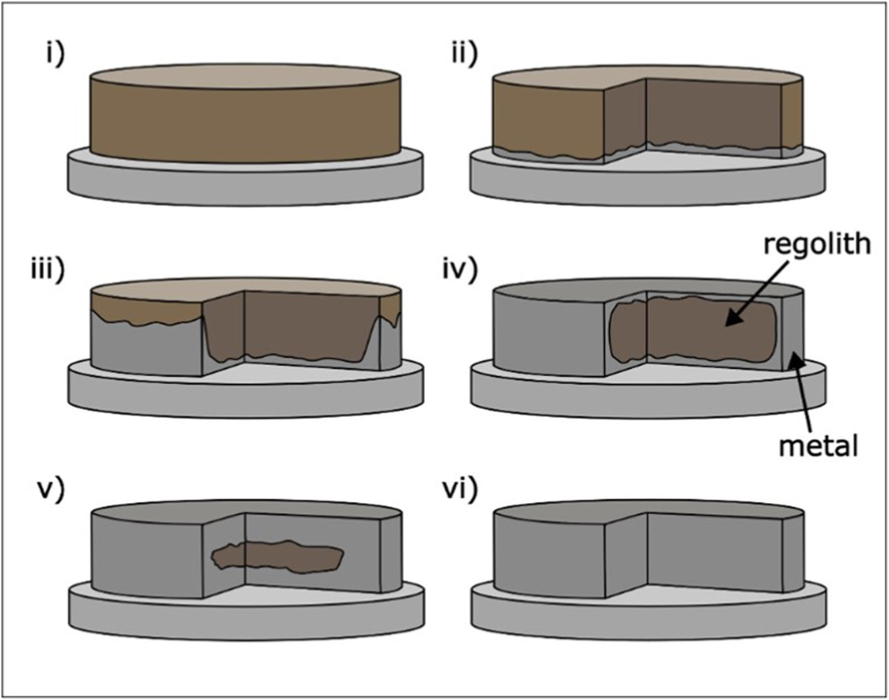
2.2Datasets
Table 1 lists every experimental or numerical dataset I use, with the conditions that matter for the model. I read the papers' text directly; where a value is only in a figure, I digitised it (Section 5.1).
| Source | System and conditions | What I use it for |
|---|---|---|
| Lomax et al. 2020, PSS 180 | 30 g JSC-2A loose powder (>53 µm) in a mesh-lined steel basket; 1600 g CaCl2 with about 0.4 wt% CaO; 950 °C; SnO2-based anode; constant current 4 A. About 76 % of the oxygen extracted at 16 h (current efficiency 49 %), 96 % after about 50 h (23 %). | Context only. Because the run was galvanostatic, its extraction curve mainly reflects current efficiency, not solid-state kinetics, so I did not fit kinetics to it (the original plan in my specification). |
| Lomax et al. 2022, Nat. Commun. 13:583 | Water electrolysis, 0.75 M H2SO4, gold foil anode 1.56 cm² on a vertical holder, three-electrode cell, potentials vs Ag/AgCl without iR compensation. Galvanostatic 50, 75, 100 mA/cm²; potentiostatic 2.075 V. Hypergravity 1 to 8 g on a 25 cm centrifuge in the lab; 0.166 to 1 g on the same centrifuge during parabolic flights (three flights of 30 parabolas, 18 s per experiment). | The calibration target for the bubble chain (Section 8): the logarithmic fits of potential change versus g (Fig. 7), and the potentiostatic versus galvanostatic comparison (11 % less product versus about 1 % more power at lunar g). |
| Meurisse et al. 2022, PSS 211 | LMS-1 pellets, 24 g, sintered 2 h at 1135 °C in Ar, about 46 mm × 10 mm. 800 g CaCl2, 2.3 L Inconel 600 vessel, 0.5 L alumina crucible, Ø47 mm SS316 basket, graphite rod Ø12.7 mm × 100 mm, two-electrode, 3.2 V for 24 h. About 85 % extraction and 48 % current efficiency at 950 °C; 50 % at 850 °C. Table 2 gives the bulk chemistry of the lab's LMS-1 batch. | Cell geometry (pellet, anode), the lab's own LMS-1 composition for the oxygen staircase (Section 5.5), the simple-oxide ladder that my mineral ladder extends (Section 4). |
| Lomax et al. 2025, Acta Astronaut. 234 | Same cell and method, 24 g loosely sintered pellets of LMS-1 and LHS-1, 800 g CaCl2 plus 0.7 wt% CaO, 950 °C, 3.2 V, Ar purge, graphite or SnO2 anodes. Sixteen interrupted runs: LMS-Graphite 1 (5, 10, 16, 24, 30 h), LMS-Graphite 2 (5, 10, 13, 16, 24 h), LMS-SnO2 (5, 10, 24, 48 h), LHS-Graphite (15, 30 h). Residual oxygen by inert gas fusion: 41.60 wt% in the fresh LMS-1. | Cumulative extraction (Fig. 2) and hourly rates (Fig. 3), digitised, for the kinetics (Section 5); Ca uptake and Fe metallisation for the thermodynamics (Section 4); the 1 g extraction curve that converts a rate loss into hours (Section 9). |
| Burke et al. 2024, Front. Space Technol. 5:1304579 | CFD (OpenFOAM 9, interFoam volume-of-fluid, isothermal), one bubble grown from a 2 mm radius nucleation site modelled as a gas inlet at 7.16 × 10−7 m³/s, in a 15 × 10 × 10 cm chamber; water, molten regolith and molten CaCl2; 1 g, Mars (3.68 m/s²), Moon; horizontal and vertical electrodes; constant contact angle boundary condition. | An independent, dynamic estimate of how detachment volume scales with g in CaCl2 (Section 6.6). No coverage or voltage is computed there. |
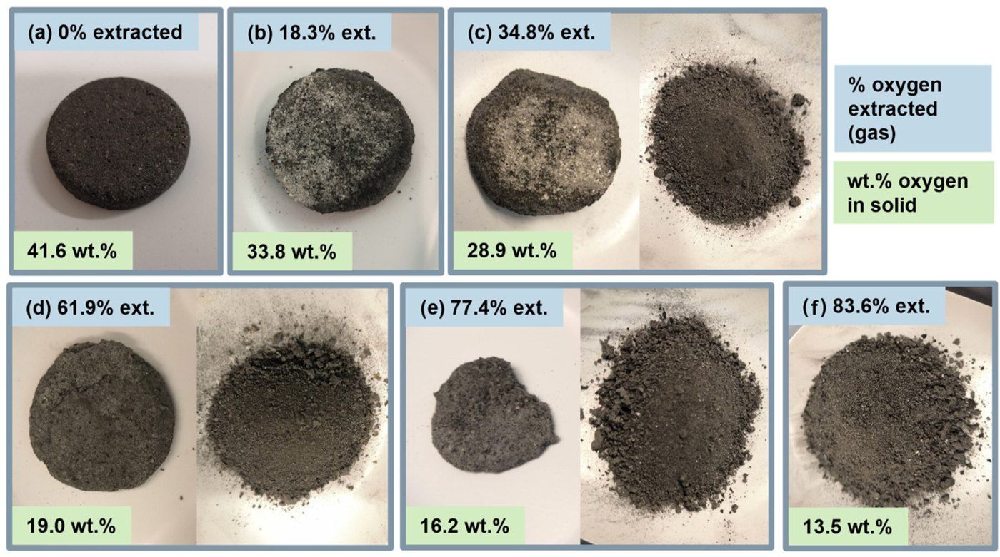
3Model architecture
The gravity model is a chain in which each link is a published relation with its own parameters:
$$ g \;\longrightarrow\; d_{\rm dep}(g) \;\longrightarrow\; \Theta(g) \;\longrightarrow\; \Delta V(g)-\Delta V(g_E) \;\longrightarrow\; \frac{\Delta I}{I}\ \text{at fixed }V \;\longrightarrow\; \dot m_{\rm O_2},\ t_X . $$- Departure size $d_{\rm dep}$: the diameter of the bubble when it leaves the anode. Three descriptions are used: the Fritz law for a spreading contact line, the pinned-contact-line law of Angulo et al. (2020), and my own Young-Laplace integration of static bubble shapes, which gives absolute sizes and checks the pinned scaling (Section 6).
- Coverage $\Theta$: the fraction of anode area shaded by attached gas. At 1 g it comes from the Vogt-Balzer correlation; its change with g comes from the change in bubble footprint, combined with Poisson overlap (Section 7.2).
- Voltage penalty: an ohmic term for the resistive gas-laden layer (Hyde and Welch) plus an activation term from the higher local current density on the uncovered area (Section 7.3 and 7.4). Only the change relative to Earth is reported, which cancels part of the unknowns.
- Operating consequence: at fixed cell voltage (ESA's mode), the penalty becomes a lower current; at fixed current it becomes extra energy per kilogram of oxygen (Section 9.3).
The uncertain mechanism parameters (detachment law, pinning radius, coverage exponent, transfer coefficient, layer thickness factor) are sampled from broad priors and weighted by agreement with the water data of Lomax et al. 2022 (Section 8); the weighted samples are then evaluated with molten-salt properties. Two side analyses use the same ESA datasets but are not inputs to the gravity chain: Module A (thermodynamics, Section 4) and Module B (kinetics of the pellet, Section 5). Module D (environment, Section 10) is a pair of design estimates.
| File | Content |
|---|---|
| thermo.py | Reversible potentials of 22 cathode steps, CaO activity correction, Monte Carlo over Gibbs energies and CaO activity, predominance curves. |
| stages.py | Oxygen bound to each element for five simulant compositions; stage-1 share on two oxygen bases. |
| knee.py | Geometric null model of the pellet, fitted to the digitised cumulative curve; comparison of its rate with the digitised hourly rates. |
| kinetics.py | Shrinking-core fits to Lomax 2020 (set aside, see Table 1). |
| bubble_shape.py | Young-Laplace integration and maximum-volume departure criterion; departure-size sweep 0.05 to 20 g. |
| bubble_growth.py | Sequence of static shapes up to departure, for the 3D view on the main page. |
| bubbles.py | The chain (departure, coverage, ohmic and activation terms), the energy conversion, and the original uncalibrated Monte Carlo. |
| bubble_calib.py | First implementation of the calibration on the water data (loop form, 40,000 draws). |
| sim_table.py | Vectorised calibration (60,000 draws, seed 11) and the tables of extra voltage and coverage versus g and j. All gravity results in this paper come from this script. |
| prior_sens.py | Repeats the calibration with widened prior ranges and error widths (Section 8.7, Table S1). |
| headroom.py | Three estimates of the voltage headroom at fixed 3.2 V: thermodynamic chord, electrolyte ohmic drop, and the tin oxide against graphite comparison (Section 9.3, Table S2). |
| environment.py | Hertz-Knudsen evaporation into vacuum; lunar-night hold versus remelt energies. |
4Thermodynamics of the cathode reactions
4.1Reversible potentials
Each candidate cathode process is written as a full cell reaction with O2 evolved at an inert anode at 1 bar. Its reversible potential is
$$ E = \frac{\Delta G_r(T)}{zF}, \qquad \Delta G_r = \sum_{\rm products}\nu_i\,\Delta_f G_i(T) \;-\; \sum_{\rm reactants}\nu_i\,\Delta_f G_i(T), \tag{1}$$where $z$ is the number of electrons transferred per formula unit as written, $F = 96485.33$ C/mol, and elements in their reference states and O2 have $\Delta_f G = 0$. For a simple oxide MOx reduced to the element this reduces to $E = -\Delta_f G({\rm MO}_x)/(2xF)$. Gibbs energies of formation are tabulated at 1200 and 1300 K (Table 4) and linearly interpolated to 1223 K. I checked the electron count of every step; an independent hand recomputation in the review agrees with the code to better than 1 mV (for example SiO2 → Si 1.792 V, CaSiO3 → Si + CaO 2.021 V, CaO → Ca 2.626 V).
4.2CaO activity
CaO produced or consumed by a step is dissolved in the melt, not present as pure solid. With activities $a_i$ (pure solid CaO = 1) and O2 at 1 bar,
$$ E(a) = E^\circ + \frac{RT}{zF}\,\ln\frac{\prod_{\rm prod} a_i^{\nu_i}}{\prod_{\rm reac} a_i^{\nu_i}}. \tag{2}$$Dissolved CaO released as a product makes a step easier (lower $E$); dissolved CaO consumed as a reactant makes it harder. This sign is the whole content of the calcium result below.
4.3Routes: simple oxides, minerals, Ca-intermediates, alloys
The ladder contains four kinds of step, kept side by side so that each correction is visible: simple oxides to elements (the Meurisse et al. 2022 basis); real regolith minerals (ilmenite, fayalite, forsterite, diopside, anorthite, spinel) with Robie and Hemingway (1995) data; reduction through the Ca-intermediates that the FFC literature observes (CaSiO3: Xiao et al. 2012; CaTiO3: Schwandt et al. 2010); and products that are alloys rather than pure metals (FeSi, Mg2Si, CaSi2, CaSi). The ceiling is the decomposition of the salt itself, CaCl2 → Ca + Cl2.
| Step | E, unit act. (V) | MC median [5 %, 95 %] (V) |
|---|---|---|
| FeO → Fe | 0.999 | 0.999 [0.982, 1.016] |
| Fayalite Fe2SiO4 → 2Fe + SiO2 | 1.010 | 1.010 [0.993, 1.028] |
| Ilmenite FeTiO3 → Fe + TiO2 | 1.059 | 1.059 [1.032, 1.085] |
| MnO → Mn | 1.529 | 1.529 [1.512, 1.546] |
| SiO2 + Fe → FeSi | 1.614 | 1.614 [1.581, 1.648] |
| SiO2 → Si (simple oxide) | 1.792 | 1.791 [1.787, 1.796] |
| TiO2 → Ti (simple oxide) | 1.873 | 1.873 [1.869, 1.878] |
| Diopside → Si + CaSiO3 + MgO | 1.909 | 1.909 [1.887, 1.931] |
| Forsterite Mg2SiO4 → Si + 2MgO | 1.938 | 1.938 [1.919, 1.957] |
| Anorthite → 2Si + CaO + Al2O3 | 1.960 | 1.929 [1.907, 1.952] |
| CaSiO3 → Si + CaO | 2.021 | 1.959 [1.920, 2.000] |
| CaO + 2Si → CaSi2 | 2.038 | 2.160 [1.974, 2.338] |
| CaTiO3 → Ti + CaO | 2.101 | 2.039 [1.999, 2.081] |
| CaO + Si → CaSi | 2.112 | 2.235 [2.097, 2.373] |
| Al2O3 → 2Al (simple oxide) | 2.224 | 2.224 [2.220, 2.228] |
| 2MgO + Si → Mg2Si | 2.245 | 2.245 [2.233, 2.257] |
| Spinel MgAl2O4 → 2Al + MgO | 2.284 | 2.285 [2.273, 2.296] |
| MgO → Mg (simple oxide) | 2.421 | 2.421 [2.413, 2.430] |
| Forsterite → 2Mg + SiO2 | 2.568 | 2.568 [2.550, 2.585] |
| CaO → Ca (pure metal) | 2.626 | 2.748 [2.671, 2.824] |
| Diopside → Mg + CaSiO3 + SiO2 | 2.656 | 2.656 [2.612, 2.702] |
| CaCl2 → Ca + Cl2 (salt ceiling, $p_{\rm Cl_2}$ = 1 bar) | 3.178 | 3.178 [3.170, 3.187] |
Three observations. First, the order Fe, then Si and Ti, then Al, then Mg, then Ca is the same as for simple oxides; the mineral routes do not change it. Second, the mineral and intermediate routes narrow the gap between the Si/Ti group and the Al/Mg group: CaTiO3 → Ti at 2.04 V (Monte Carlo median) against Al2O3 at 2.22 V is 0.18 V, and 0.12 V at unit CaO activity, against 0.35 V between TiO2 and Al2O3. That weakens, rather than supports, the idea of a clean voltage-selected stage. Third, the ladder lists alternative routes for the same atoms (for example Mg from MgO, from forsterite and into Mg2Si); they are not independent sequential steps. Once Si has left forsterite, Mg is reduced from MgO (2.42 V) or into Mg2Si (2.25 V), not from forsterite (2.57 V).
4.4Monte Carlo
Each $\Delta_f G_i$ is drawn from $\mathcal N(\Delta_f G_i, s_i^2)$ with the 1-sigma $s_i$ of Table 4, which I assigned from source quality: 1 to 2 kJ/mol for JANAF oxides, 3 to 5 kJ/mol for Robie and Hemingway minerals, 8 kJ/mol for FeSi, and 13 to 19 kJ/mol for the Ca silicides. $a_{\rm CaO}$ is drawn log-uniformly over 0.02 to 0.5; temperature is fixed at 1223 K. The JANAF and Robie-Hemingway databases differ by 3 to 5 kJ/mol for the same phase (forsterite: 1691.8 versus 1697.0 kJ/mol at 1200 K), that is 5 to 10 mV for a two-electron step, which can reorder steps lying within about 20 mV of each other.
4.5The calcium result: a predominance view
The Si step through the intermediate, CaSiO3 → Si + CaO + O2 ($z = 4$), releases CaO; calcium-silicide formation, CaO + 2Si → CaSi2 + ½O2 ($z = 2$), consumes it. From Eq. (2) their difference is
$$ E_{\rm CaSi_2} - E_{\rm Si/CaSiO_3} \;=\; 0.017\ {\rm V} \;-\; \frac{3RT}{4F}\,\ln a_{\rm CaO}, \tag{3}$$with $3RT/4F = 0.079$ V per e-fold, or 0.182 V per decade, at 1223 K. The gap is 17 mV at $a_{\rm CaO} = 1$, 0.20 V at 0.1 and 0.38 V at 0.01. An earlier version of this work quoted a "0.2 V window" and a 5.6 % probability of overlap; both came from the prior on $a_{\rm CaO}$ (log-uniform 0.02 to 0.5, geometric mean 0.1), not from the system, and I no longer use them. Inside a reducing pellet, O2− is released into the pore electrolyte, and Ca-intermediates form precisely because the local CaO activity is high. Near $a_{\rm CaO} = 1$ the window closes: silicide formation is roughly coincident with Si reduction. That is consistent with calcium appearing in all reported products (a Ca-Al-Si alloy in Lomax et al. 2020; Al2Si2Ca and AlSiCa in the Schild et al. 2025 abstract). CaO activity is a two-sided knob: too low and the salt itself is decomposed to supply Ca for the intermediates, with Cl2 evolution (Lomax et al. 2025 make this point); too high and Ca alloys into the product.
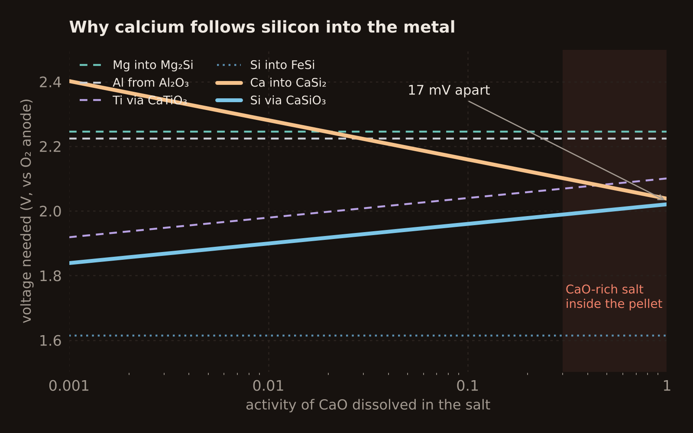
thermo.py (data in predominance.json). Si via CaSiO3 rises and CaSi2 formation falls with $a_{\rm CaO}$; they meet within 17 mV at $a_{\rm CaO} = 1$. Steps without CaO are horizontal. My plot.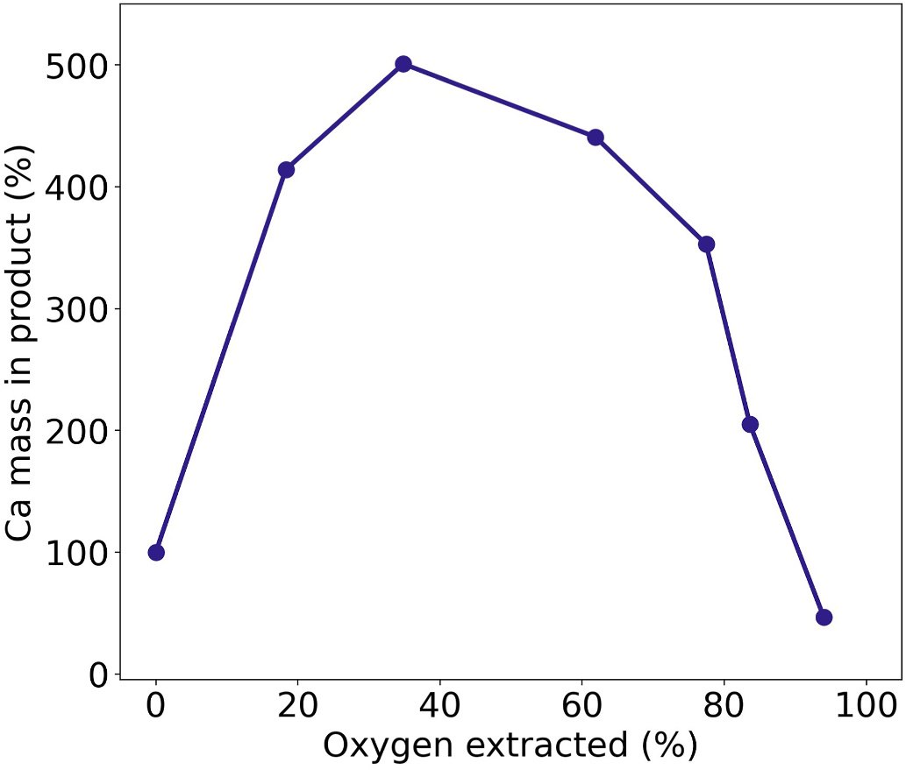
4.6Graphite anode and the salt ceiling
Table 3 assumes an inert anode. With graphite, the anodic product is CO2 or CO, and every step that releases oxygen shifts down by the same amount:
$$ E_{\rm C} = E_{\rm O_2} + \frac{\Delta_f G({\rm CO_2})}{4F} \quad\text{or}\quad E_{\rm C} = E_{\rm O_2} + \frac{2\,\Delta_f G({\rm CO})}{4F}, \tag{4}$$which is −1.026 V for CO2 and −1.140 V for CO at 1223 K (CO is the Boudouard-favoured product at this temperature). The ordering is preserved. The CaCl2 line contains no oxygen and does not move, so the gap between the oxide steps and the salt ceiling widens by about 1.1 V. The stage-1 boundary near 2.05 V (inert) becomes about 0.9 to 1.0 V; CaO → Ca at $a_{\rm CaO} = 0.1$ becomes about 1.5 to 1.6 V. At 3.2 V with graphite, every step in the ladder, including Ca deposition, has a positive thermodynamic driving force. The ladder ranks preference; it does not switch steps on or off. Which steps are active depends on the cathode potential inside the pellet, which is not measured in a two-electrode cell at fixed cell voltage, where the split between ohmic drop, anode and cathode is unknown and drifts during a run.
The ceiling itself is soft. The 3.178 V value assumes $p_{\rm Cl_2}$ = 1 bar. Under an argon purge $p_{\rm Cl_2}$ is small, and
$$ E_{\rm CaCl_2} = E^\circ_{\rm CaCl_2} + \frac{RT}{2F}\ln p_{\rm Cl_2} \tag{5}$$gives about 2.69 V at $p_{\rm Cl_2} = 10^{-4}$ bar. Cl2 is thus thermodynamically possible below 3.2 V, as Schwandt et al. (2010) state for TiO2 reduction. This matters for Section 9: raising the voltage to compensate for a gravity penalty pushes further into the region where Cl2 is possible.
4.7Caveats
- Ca silicides: only 298 K formation enthalpies exist in my sources (Brutti et al. 2001). I set $\Delta_f G(1223\ {\rm K}) \approx \Delta_f H_{298}$ and carry $s = T\times 5$ J/(mol-atom K) × atoms, that is 19 kJ/mol for CaSi2 (about ±0.1 V for $z=2$). A CALPHAD description (Heyrman and Chartrand 2006) would replace this; I could not access it.
- CaAl2Si2, the phase the Schild et al. 2025 abstract reports, has no data in my set (Materials Project entry mp-7704 was identified but not retrieved). This is the main thermodynamic gap.
- FeSi: a fit valid to 1200 K (Pankratz et al. 1984, via Nikolaychuk 2019); the 1300 K value is an extrapolation, and the literature spread at 298 K is about 20 kJ/mol.
- Products: anorthite → 2Si + CaO + Al2O3 should end in Ca aluminates (observed intermediates include Ca12Al14O33, quoted by Meurisse et al. 2022), not free CaO + Al2O3; the review estimates this lowers the step by about 0.05 V, an estimate I have not checked.
- Ti: CaTiO3 → Ti refers to removal to a sub-oxide or Ti(O) solid solution. The last oxygen in Ti(O) needs potentials close to Ca deposition, +0.17 V versus Ca/Ca2+ at 900 °C (Schwandt et al. 2010). Ti carries only 0.6 to 7 % of the oxygen in these simulants, so the effect on Section 5 is small.
| Species | 1200 K | 1300 K | sd | Source |
|---|---|---|---|---|
| CaCl2 (l) | −616.153 | −603.921 | 1.0 | J Ca-011 |
| CaO | −509.239 | −498.082 | 1.0 | J Ca-027 |
| MgO | −469.844 | −458.291 | 1.0 | J Mg-008 |
| Al2O3 (α) | −1295.228 | −1262.264 | 1.5 | J Al-096 |
| TiO2 (rutile) | −727.113 | −709.265 | 1.0 | J O-043 |
| SiO2 (quartz) | −695.426 | −678.114 | 1.0 | J O-039 |
| FeO (stoichiometric) | −194.316 | −187.947 | 2.0 | J Fe-018 |
| MnO | −296.8 | −289.4 | 2.0 | RH p.199 |
| Anorthite CaAl2Si2O8 | −3324.7 | −3248.0 | 5.0 | RH p.362 |
| Diopside CaMgSi2O6 | −2503.8 | −2445.5 | 4.0 | RH p.347 |
| Forsterite Mg2SiO4 | −1691.8 | −1651.1 | 4.0 | RH p.335 (JANAF: −1697.0) |
| Fayalite Fe2SiO4 | −1088.7 | −1056.8 | 4.0 | RH p.332 |
| Ilmenite FeTiO3 | −933.0 | −908.5 | 3.0 | RH p.235 |
| Wollastonite CaSiO3 | −1293.1 | −1264.4 | 3.0 | RH p.342 |
| Perovskite CaTiO3 | −1323.9 | −1295.6 | 3.0 | RH p.232 |
| Spinel MgAl2O4 | −1799.7 | −1756.1 | 4.0 | RH p.237 |
| Gehlenite Ca2Al2SiO7 | −3178.2 | −3108.3 | 5.0 | RH p.314 |
| Mg2Si | −68.536 | −66.095 | 2.0 | J Mg-034 |
| FeSi | −68.75 | −67.74 | 8.0 | Pankratz et al. 1984 fit via Nikolaychuk 2019 (1300 K extrapolated) |
| CaSi2 | −113.4 | −113.4 | 19.0 | Brutti et al. 2001, $\Delta_f H_{298}$ = −37.8 kJ/mol-atom, $\Delta G \approx \Delta H$ assumed |
| CaSi | −99.2 | −99.2 | 13.0 | Brutti et al. 2001, $\Delta_f H_{298}$ = −49.6 kJ/mol-atom, $\Delta G \approx \Delta H$ assumed |
5Kinetics and the 60 % knee
Lomax et al. (2025) describe a sigmoidal extraction: a moderate rate up to about 20 %, the highest rate between 20 and 60 %, and a falling rate from 60 to 80 %. They recommend 60 % as the endpoint that gives the most oxygen per unit time. They attribute the stages qualitatively to the known reduction mechanisms of the different oxides. I tested one quantitative version of that idea: does the slowdown near 60 % coincide with exhausting the oxygen bound to the easily reduced elements (Fe, Mn, Si, Ti), or can pellet geometry alone produce it?
5.1Data and digitisation
The extraction values are only in Lomax et al. 2025 Figs. 2 and 3. I digitised Fig. 2 (cumulative extraction versus time, LMS-1 with graphite anode, average of the runs) from the image embedded in the PDF by blob detection, with the vertical axis calibrated on the frame (0 to 100 %) and the horizontal axis on the 2 h spacing of the points. An independent pixel-centroid check in the review matched my values to within 0.5 percentage points. I digitised Fig. 3 (hourly rates) for the LMS-1 graphite series and the LHS-1 graphite series; the 10 h LMS point is missing from my file. Integrating the hourly rates gives about 60 % at 17 h and 63 % at 18 h (the exact tenths depend on how the missing 10 h point is interpolated). The rates convert to percentages on an oxygen basis of 24 g × 0.445, which is the basis implied by matching Fig. 2 with the integral of Fig. 3 (9.54 g at 89.3 %).
A critical point is that Figs. 2 and 3 average runs of different durations, so the number of runs behind each hour falls with time (Table 5). After 15 h, the LHS-1 curve is a single run.
| Hour | 5 | 6 | 11 | 14 | 17 | 25 |
|---|---|---|---|---|---|---|
| Runs alive | 10 | 8 | 6 | 5 | 3 | 1 |
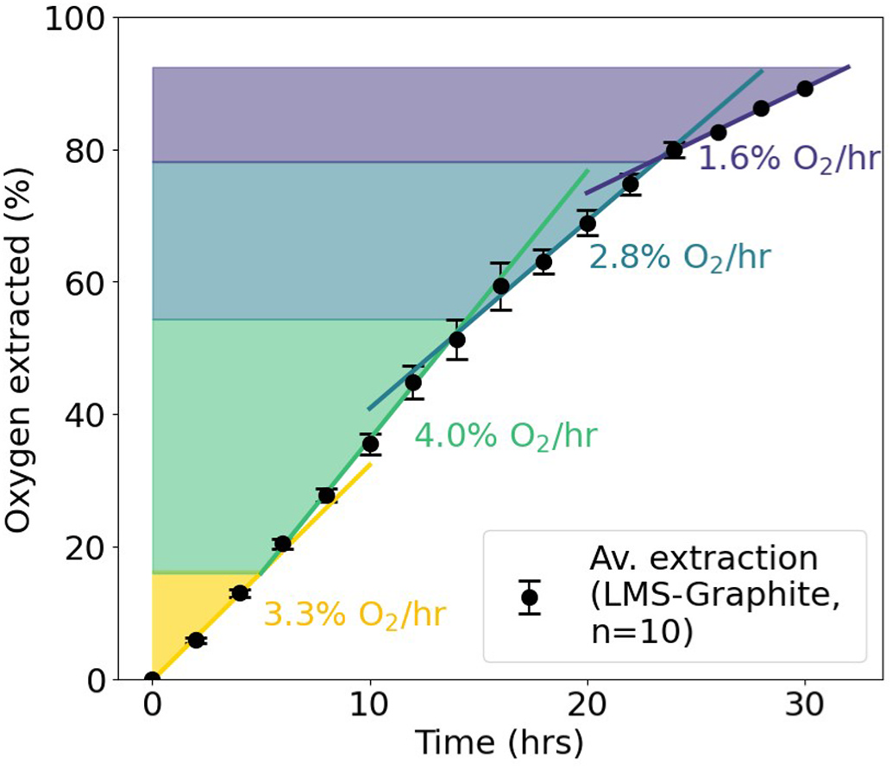
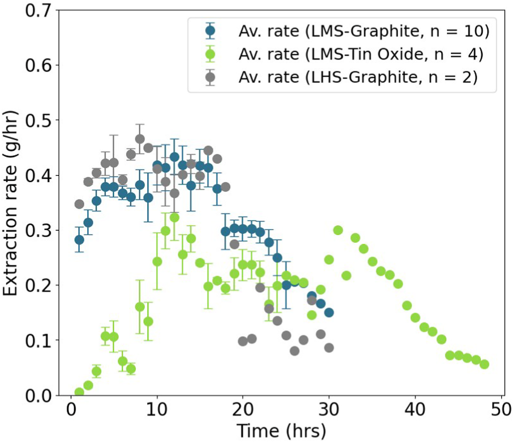
5.2Linear versus square-root time
For extraction $X$ in percent and time $t$ in hours, I fitted, through the origin and over the points up to the knee,
$$ X = a\,t \qquad\text{and}\qquad X = b\,\sqrt{t}. \tag{6}$$Up to 16 h: $a = 3.64$ %/h with rms residual 1.1 %, against 7.8 % for $\sqrt t$; up to 18 h: rms 1.2 % against 8.2 %. A free power law gives an exponent of 1.09 to 1.11. Parabolic growth of a diffusion-limited product layer ($X \propto \sqrt t$) is therefore excluded up to about 60 %. That does not by itself identify control by the reaction front. A cell whose current is limited by the cell (ohmic drop, anode overpotential, basket contact) with a slowly varying current efficiency also gives $X \propto t$. The first 4 h are accelerating, which interface control on a shrinking body would not predict. For the later segments I get 2.56 %/h for 16 to 24 h and 1.55 %/h for 24 to 30 h from the digitised points, against 2.8 and 1.6 %/h from the authors' fitted lines; the 24 to 30 h segment is one run.
If the front moves inwards from all surfaces of the 46 × 10 mm disc (Fig. 1 shows reduction starting at the basket contact and wrapping round the outside), the observed rate corresponds to a front speed of 0.145 mm/h, about 40 nm/s. For comparison, Osarinmwian and Roberts (2023) fit 14 nm/s for a diffusion-controlled 3PI penetration in TiO2. A front moving at roughly constant speed can itself be limited by O2− diffusion in the pore electrolyte near the 3PI; the linear law only excludes diffusion through a growing product shell. An earlier draft cited that paper the other way round, which was wrong.
5.3Geometric null model
To ask whether geometry alone could make a knee, I modelled a front moving at constant speed $v$ from all surfaces of a disc of radius $R = 23$ mm and thickness $H = 10$ mm, with no chemistry:
$$ X(t) = 1 - \frac{(R - vt)^2\,(H - 2vt)}{R^2 H}, \qquad R - vt \ge 0,\ H - 2vt \ge 0. \tag{7}$$I fitted $v$ by bounded least squares to the digitised cumulative curve over 0 to 30 h. The best fit is $v = 0.145$ mm/h with rms residual 1.9 % and maximum residual about 3 %. So the cumulative data alone do not require a chemical stage. The discriminating observable is the rate. The null model's rate, $\Delta X$ per hour times the oxygen basis, is highest at $t = 0$ and declines smoothly, with a largest one-hour drop of 0.009 g/h. The measured rate rises for about 4 h, plateaus near 0.38 to 0.42 g/h, then drops by 0.078 g/h in one hour between 17 and 18 h (Table 6).
| Hour | 1 | 3 | 5 | 10 | 15 | 17 | 18 | 20 | 24 | 30 |
|---|---|---|---|---|---|---|---|---|---|---|
| Measured (g/h) | 0.284 | 0.355 | 0.380 | 0.387 | 0.419 | 0.377 | 0.299 | 0.303 | 0.252 | 0.151 |
| Null model (g/h) | 0.440 | 0.423 | 0.406 | 0.365 | 0.327 | 0.312 | 0.304 | 0.290 | 0.261 | 0.221 |

Where exactly the knee sits depends on how it is read: the best single-break fit to Fig. 2 is at 19 h / 68 % (rms 1.16 %); breaks at 17 to 18 h give rms 1.22 to 1.23 %; the authors' shading puts the change at about 54 % (14 h), rms 1.77 %. I do not quote it more precisely than about 55 to 68 %.
5.4The oxygen staircase
For a composition given as oxide mass fractions $w_k$, the oxygen bound to element $e$ per unit mass of simulant is
$$ o_e = \sum_{k \in e}\frac{w_k}{\sum_j w_j}\;\frac{m_k M_{\rm O}}{n_k M_e + m_k M_{\rm O}}, \tag{8}$$for oxide MnOm. Stage 1 is the oxygen of Fe, Mn, Si and Ti (with traces of Ni and Cr), all reducible below about 2.05 V with an inert anode. The oxygen of Na, K, P, S and Sr is counted separately as exchangeable: Na2O + CaCl2 → 2NaCl + CaO puts that oxygen into the melt, from where it is discharged at the anode, so it belongs inside a gas-based extraction percentage. The result depends strongly on which composition and which oxygen basis are used (Table 7).
| Composition | O (wt%) | Stage 1 | Exch. | Sum, own basis | Sum, measured basis |
|---|---|---|---|---|---|
| LMS-1, Meurisse 2022 Table 2 (ESA lab batch) | 43.74 | 60.2 % | 3.8 % | 64.0 % | 67.3 % |
| LMS-1, Exolith 2021 sheet | 43.68 | 65.9 % | 1.6 % | 67.5 % | 70.9 % |
| LMS-1, Exolith Dec 2023 sheet | 44.55 | 65.7 % | 1.5 % | 67.2 % | 71.9 % |
| LHS-1, Exolith 2021 sheet | 45.77 | 59.7 % | 1.9 % | n/a | n/a |
| LHS-1, Exolith Dec 2023 sheet | 45.90 | 59.9 % | 1.8 % | n/a | n/a |
With the ESA lab's own batch and the oxygen basis implied by Fig. 2 (about 44.5 wt%), stage 1 plus exchangeable oxygen is about 63 %, which sits on the measured step at 60 to 63 %. Across composition sources and bases, however, the LMS-1 prediction spans 60 to 72 %. The test therefore has a systematic error of about ±5 points, larger than any agreement it could show. On the lab's batch, Si alone carries 51.8 % of the oxygen, Mg 17.0 %, Al 15.1 %, Ti 4.2 %, Fe 4.0 %, Ca 3.8 % and Na 2.9 %.
5.5Verdict and the discriminating experiment
Status: inconclusive. The oxygen bound to Fe, Mn, Si and Ti is 60 to 72 % of the total for LMS-1 depending on composition and basis, which brackets the 55 to 68 % at which the averaged LMS rate drops (n = 3 runs at that time). The LHS-1 comparison rests on a single run after 15 h (its rate falls from 0.38 to 0.10 g/h and then rises again to 0.195 g/h) and cannot test the idea. The geometric null model reproduces the cumulative curve to 1.9 % rms, so only the abruptness of the rate step favours a chemical explanation. Alternatives that would also produce a current drop near 60 %:
- Geometry: the unreduced core vanishes; Lomax et al. note that by 80 % the product is entirely powder.
- Partial reduction behind the front: grain-scale shrinking cores leave MgO and Al-intermediates behind.
- Ca-intermediate release and the melt CaO buffer: 0.7 wt% CaO in 800 g of salt holds about 1.6 g of oxygen, roughly 15 % of the pellet oxygen. Gas-measured rates are anode rates, not cathode rates.
- Graphite-anode effects: carbonate formation, carbon transfer and drift of the CO/CO2 ratio change the anodic oxygen accounting.
- Current versus current efficiency: the rate is current times efficiency; since the cumulative efficiency is still rising at 60 %, the step is most likely a drop in current. A cathode that needs a more negative potential and a rising cell resistance as the pellet powders both predict that.
The discriminating experiment is two pellet thicknesses (for example 5 and 10 mm) under identical conditions. A chemical stage keeps the knee at the same percentage extraction; geometric or front control moves it, with the knee time scaling with thickness. Interrupted runs at about 55 % and about 70 %, examined by XRD and SEM-EDX, would show whether Si-bearing phases survive the knee. Per-run current traces, which ESA holds, would separate a current drop from an efficiency drop and give the run-to-run scatter of the knee.
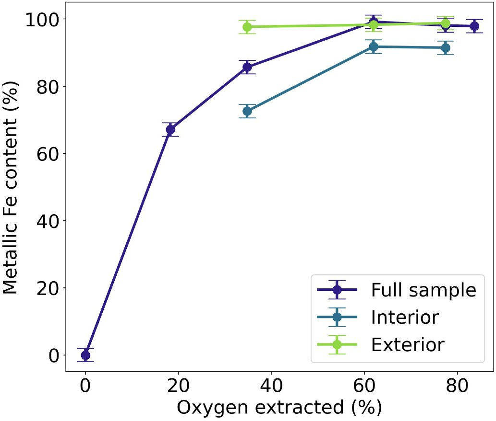
5.6Simulant note
The ESA batch of LMS-1 contains 4.92 wt% Na2O against 0.41 wt% in Apollo 11 soil 10084 (Meurisse et al. 2022, Table 2). About 2.9 % of its oxygen therefore leaves by Na2O + CaCl2 exchange rather than by reduction, and the salt accumulates NaCl over repeated runs. This is a simulant artefact that lunar feedstock would not show to the same degree.
6Bubble departure
6.1Scales
Two numbers set the problem: the capillary length, below which surface tension dominates gravity, and the Bond number of a bubble of diameter $d$:
$$ \lambda_c = \sqrt{\frac{\sigma}{\Delta\rho\, g}}, \qquad {\rm Bo} = \frac{\Delta\rho\, g\, d^2}{\sigma}. \tag{9}$$For molten CaCl2 at 1223 K I use $\sigma = 0.1429$ N/m (Janz et al. 1975 table, linear fit to 1223 K) and $\rho_l = 2009$ kg/m³ (NSRDS-NBS 15 equation); the O2 density at 1223 K and 1 bar is 0.315 kg/m³, so $\Delta\rho = \rho_l$ to 0.02 %. With $g$ = 9.80665, 3.71 and 1.62 m/s², $\lambda_c$ is 2.69 mm (Earth), 4.38 mm (Mars) and 6.63 mm (Moon). The gas generation rate at the anode, for four electrons per O2 or CO2 molecule, is
$$ \frac{\dot V}{A} = \frac{j\,RT}{4Fp}, \tag{10}$$2.63 × 10−7 m³/s per ampere at 1223 K and 1 bar, or a superficial gas velocity of 0.37 mm/s at $j$ = 0.14 A/cm². CO, with two electrons per molecule, doubles the gas volume; the chain does not resolve the anode gas composition.
6.2Two classical detachment laws
Fritz (spreading contact line). For quasi-static detachment from an upward-facing horizontal surface with a free contact line at angle $\theta$ (degrees),
$$ d_{\rm F} = 0.0208\,\theta\,\sqrt{\frac{\sigma}{g\,\Delta\rho}} = 0.0208\,\theta\,\lambda_c \;\propto\; g^{-1/2}. \tag{11}$$At $\theta = 120°$, a carbon/cryolite analogue, this gives 6.7 mm on Earth, 10.9 mm on Mars and 16.5 mm on the Moon; the Moon/Earth size ratio is 2.46 and the volume ratio 14.9. The lunar Fritz bubble is larger than the 12.7 mm rod anode, which already shows that the plate picture fails there. Demirkır et al. (2024) also show that electrolytic bubbles that spread on the electrode deviate strongly from the Fritz value because of contact-line hysteresis.
Pinned contact line. If the contact line is anchored on a site of radius $r_0$, the vertical force balance at detachment (Angulo et al. 2020, Eq. 10) gives
$$ r_{\rm dep} = \left(\frac{3\, r_0\, \sigma\, \sin\theta}{2\,\Delta\rho\, g}\right)^{1/3} \;\Longleftrightarrow\; V_{\rm dep} = \frac{2\pi r_0\,\sigma \sin\theta}{\Delta\rho\, g}, \qquad d \propto g^{-1/3}. \tag{12}$$The second form shows that this is Tate's law: buoyancy $\Delta\rho g V$ balancing the surface-tension force $2\pi r_0 \sigma \sin\theta$ on the pinning circle. Here the Moon/Earth size ratio is $(9.80665/1.62)^{1/3} = 1.82$, independent of $r_0$ and $\theta$, and the volume ratio is 6.05.
6.3Young-Laplace derivation
The force balance of Eq. (12) ignores the shape of the bubble. To get absolute sizes and to check the scaling, I computed the static shapes. Consider an axisymmetric gas bubble sitting on an upward-facing electrode, with the contact line pinned on a circle of radius $r_0$. Let $z$ be measured downward from the apex towards the electrode and $x$ the radial coordinate. The gas pressure is uniform; the liquid pressure increases with depth. The Young-Laplace equation states that the pressure jump across the interface equals surface tension times the sum of principal curvatures:
$$ p_g - p_l(z) = \sigma\left(\frac{1}{R_1} + \frac{1}{R_2}\right), \qquad p_g - p_l(z) = \frac{2\sigma}{b} - \Delta\rho\, g\, z, \tag{13}$$where $b$ is the radius of curvature at the apex (where $R_1 = R_2 = b$). Parametrise the meridian profile by arc length $s$ from the apex and let $\varphi$ be the angle of the tangent to the horizontal. Then $dx/ds = \cos\varphi$, $dz/ds = \sin\varphi$, the meridional curvature is $1/R_1 = d\varphi/ds$, and the azimuthal curvature is $1/R_2 = \sin\varphi / x$. Substituting into Eq. (13):
$$ \frac{dx}{ds} = \cos\varphi, \qquad \frac{dz}{ds} = \sin\varphi, \qquad \frac{d\varphi}{ds} = \frac{2}{b} - \frac{\Delta\rho\, g}{\sigma}\,z - \frac{\sin\varphi}{x}. \tag{14}$$Scaling lengths by $b$ ($X = x/b$, $Z = z/b$, $S = s/b$) leaves a single parameter, the Bond number built on the apex radius:
$$ \frac{dX}{dS} = \cos\varphi, \qquad \frac{dZ}{dS} = \sin\varphi, \qquad \frac{d\varphi}{dS} = 2 - \beta Z - \frac{\sin\varphi}{X}, \qquad \beta = \frac{\Delta\rho\, g\, b^2}{\sigma}. \tag{15}$$This is the same equation as for a pendant drop, with the roles of the two fluids exchanged.
Boundary conditions. At the apex $X = Z = \varphi = 0$, and $\sin\varphi / X \to d\varphi/dS = 1$ by symmetry, which removes the singularity. I start the integration at $S_0 = 10^{-6}$ with the series values $X = S_0$, $Z = S_0^2/2$, $\varphi = S_0$. The profile is integrated past the equator ($\varphi = \pi/2$) until it necks back to the pinning radius, $X = r_0/b$ with $\varphi > \pi/2$ and $X$ decreasing. That point is where the interface meets the electrode. The volume is
$$ V(b) = \int_0^{z_c} \pi\, x(z)^2\, dz, \tag{16}$$evaluated by the trapezoidal rule on the computed profile, and the equivalent diameter is $d_{\rm eq} = (6V/\pi)^{1/3}$.
Numerical integration. scipy.integrate.solve_ivp (default explicit Runge-Kutta 4(5)) with relative tolerance 10−8, absolute tolerance 10−10, maximum step 0.01 in $S$, maximum arc length 12, and a terminal event function $X - r_0/b$ armed only when $\varphi > \pi/2$, with negative crossing direction. Profiles that never return to $r_0$ within the arc length are discarded.
Detachment criterion. As gas is added slowly, the bubble passes through a sequence of static shapes of increasing $b$. For a given $g$ and $r_0$, $V(b)$ has a maximum: no static shape with the contact line on the pinning circle exists for a larger volume, so the bubble must leave. I take that maximum as the departure volume. I locate it by evaluating $V$ on 220 values of $b$ between $0.05\lambda_c$ and $3\lambda_c$, then refining with bounded scalar minimisation of $-V(b)$ between the neighbouring grid points. At $g = 0$ there is no maximum: the bubble keeps growing on the electrode until it merges with its neighbours. This quasi-static criterion neglects inertia, the growth rate and the liquid flow; it is appropriate when growth is slow compared with capillary times.
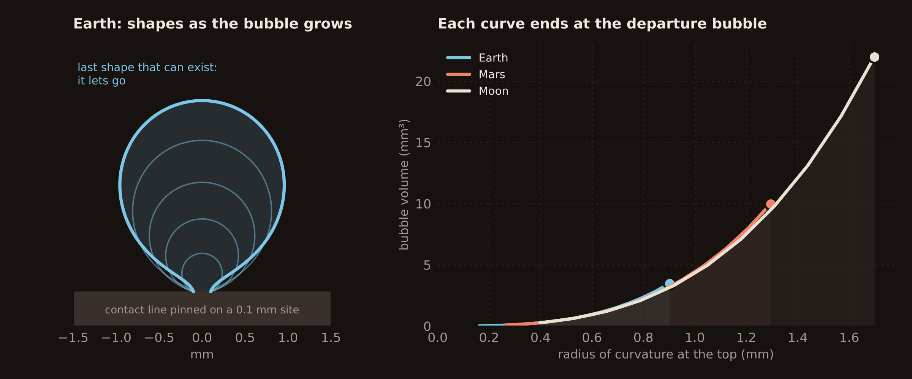
bubble_shape.py. My plot.6.4Results and checks
| $r_0$ | Earth | Mars | Moon | Moon/Earth size |
|---|---|---|---|---|
| 0.05 mm | 1.60 mm; 1.78 × 1.58; 2.15 | 2.22 mm; 2.41 × 2.19; 5.72 | 2.94 mm; 3.15 × 2.91; 13.27 | 1.84 |
| 0.1 mm | 1.99 mm; 2.30 × 1.94; 4.13 | 2.78 mm; 3.12 × 2.73; 11.19 | 3.68 mm; 4.06 × 3.63; 26.15 | 1.85 |
| 0.2 mm | 2.47 mm; 2.98 × 2.37; 7.86 | 3.45 mm; 4.03 × 3.36; 21.50 | 4.59 mm; 5.24 × 4.49; 50.62 | 1.86 |
At $r_0 = 0.1$ mm the departure bubble is 1.99 mm on Earth, 2.78 mm on Mars and 3.68 mm on the Moon; the Moon/Earth volume ratio is 6.3. Halving or doubling $r_0$ changes the Earth size to 1.6 or 2.5 mm but leaves the Moon/Earth ratio at 1.84 to 1.86. Three checks:
- Scaling. A log-log fit of the sweep from 0.05 to 20 g gives $d \propto g^{-0.344}$ (−0.340 below 1 g, −0.349 above); the Moon/Earth ratio corresponds to an exponent of 0.342. The pinned law's 1/3 is recovered to within a few percent, so the static shape adds little to the scaling and mainly fixes the absolute size.
- Tate bound. Tate's ideal volume $2\pi r_0 \sigma / (\Delta\rho g)$ is 4.56, 12.05 and 27.59 mm³ for the three gravities at $r_0$ = 0.1 mm. The Young-Laplace maxima are 0.905, 0.929 and 0.948 of these: slightly below, as for pendant drops, and approaching the ideal as the bubble becomes larger relative to the neck.
- Bond numbers. At departure, Bo = 0.55 (Earth), 0.40 (Mars) and 0.31 (Moon): the bubbles are near-spherical caps dominated by surface tension, and become more so at low g, consistent with the shapes in Fig. 9.
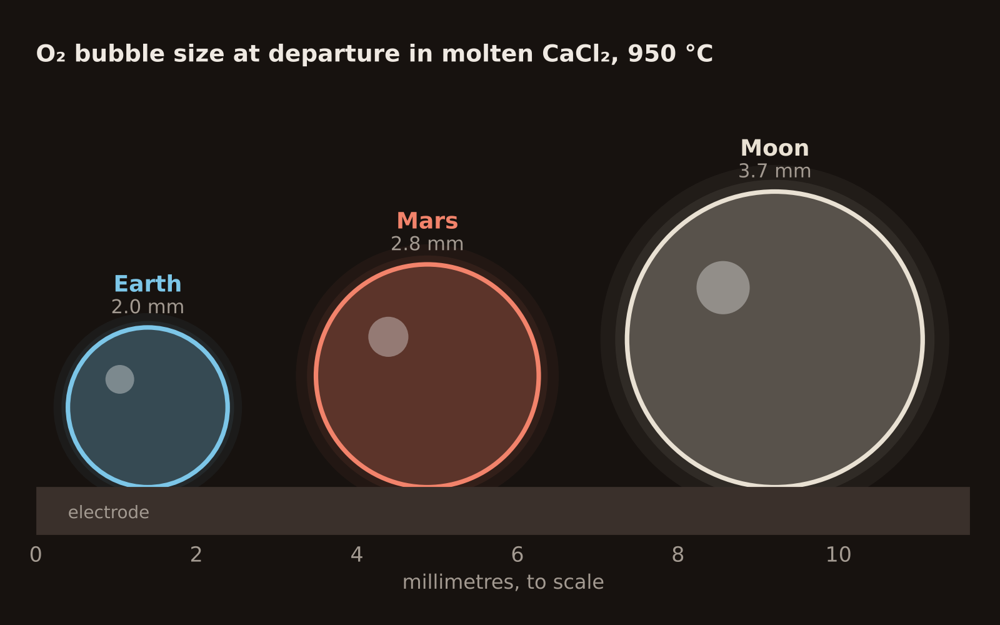
6.5Relations between the variables
Combining Eqs. (9), (11) and (12): with a free contact line $d/\lambda_c$ is fixed by $\theta$, so $d$ follows $\lambda_c \propto g^{-1/2}$ and Bo at departure is independent of $g$. With a pinned contact line $d \propto (r_0\lambda_c^2)^{1/3}$, so the bubble becomes smaller relative to $\lambda_c$ as $g$ falls and Bo at departure decreases as $g^{1/3}$, as found. The contact angle enters the pinned law only through $\sin\theta$, which varies by 0.77 to 0.97 over 105 to 130°, and cancels in the ratio to Earth. That "contact angle barely matters" is therefore a property of the chosen law, not a finding.
6.6Comparison with CFD (Burke et al. 2024)
Burke et al. (2024) grew single bubbles in CaCl2 from a gas inlet. For a horizontal electrode they report detachment volumes of 0.0895, 0.1791 and 0.3402 mL at 1 g, Mars (0.375 g) and Moon (0.165 g), unchanged between electrode contact angles of 5° and 30°. The Moon/Earth volume ratio is 3.8 (they write that bubbles are "3.8 times larger in Lunar gravity than they are in 1 g"), a size ratio of 1.56, which corresponds to $d \propto g^{-0.25}$ (0.24 from the Mars point). Their bubbles are larger in absolute terms (equivalent diameters 5.5, 7.0 and 8.7 mm) because the nucleation site has a 2 mm radius. The ratio is weaker than both of my branches (1.82 pinned, 2.46 Fritz). Their detachment volume equals the inlet flow times the detachment time, quantised in 0.025 s steps, so the dynamic growth (inertia and wake) reduces the gravity sensitivity relative to a quasi-static bubble. I therefore read my static solution as an upper bound on the gravity effect on size and Burke's as a lower estimate. For vertical electrodes, which is the orientation of the ESA anode, their Table 4 gives Moon/Earth volume ratios of 3.3, 4.0 and 4.3 at contact angles of 5°, 30° and 75° (0.1253 to 0.4118 mL, 0.1074 to 0.4297 mL, 0.0716 to 0.3044 mL), that is size ratios of 1.49 to 1.62, still below the pinned law's 1.82.
Their CaCl2 input set uses a kinematic viscosity of 1.258 × 10−7 m²/s, about nine times below the Janz (1975) value at 1223 K (about 1.1 × 10−6 m²/s), and gas properties of air at 25 °C. At Morton numbers of order 10−11 and with $\Delta\rho \approx \rho_l$, I would not expect either to change the detachment volume much; I note it for completeness, not as a criticism of the result.

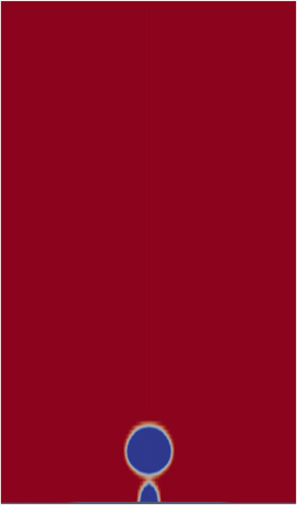

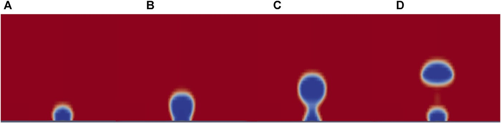
6.7Geometry caveat
Both detachment laws and my Young-Laplace solution describe a bubble on an upward-facing horizontal surface. The ESA anode is a vertical 12.7 mm graphite rod, on which bubbles slide, coalesce and leave by sliding. In a see-through cryolite cell, Stanic et al. (2021) measured detachment diameters of about 7.2 to 5.7 mm under a horizontal downward-facing anode over 0.2 to 1.0 A/cm², but 3.7 to 1.5 mm on a vertical anode over 0.1 to 2.0 A/cm². The Lomax et al. (2022) water electrodes were also mounted on vertical holders, so the calibration in Section 8 is on vertical electrodes, which partly absorbs the geometric mismatch into the fitted parameters; it does not remove it.
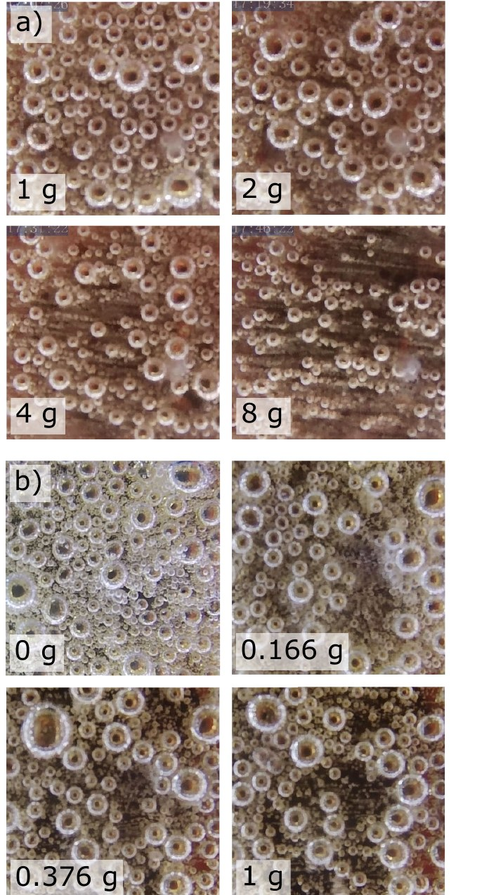
7Coverage and voltage penalty
7.1Earth coverage
For the coverage at 1 g I use the simple form of the Vogt-Balzer (2005) correlation for stagnant electrolyte,
$$ \Theta_E = 0.023\, j^{0.3}, \qquad j\ \text{in A/m}^2, \tag{17}$$capped at 0.95 in the code. At $j$ = 0.14 A/cm² (1400 A/m²) this gives 0.20; at 0.05 and 0.5 A/cm², 0.15 and 0.30. The correlation is aqueous-derived and contains no gravity; the general Vogt-Balzer relation, which includes the break-off diameter, was not available to me. Molten-salt evidence points to higher coverage: industrial aluminium cells show 40 to 80 % (Tabereaux and Peterson, quoted by Stanic et al. 2021), and Stanic et al. found their anode "never free of bubbles". This is the least constrained input of the chain (Section 8.7).
7.2Gravity scaling of coverage: footprint and Poisson overlap
Suppose bubbles sit on nucleation sites distributed randomly (Poisson) with mean number $\lambda$ of bubble footprints overlapping any point. The fraction of area covered is then $1 - e^{-\lambda}$. At fixed site density and residence fraction, $\lambda$ scales with the projected footprint, $\propto d^2$. I allow a weaker scaling with an exponent $m \in [1, 2]$ to absorb changes in site activity and residence time, and anchor $\lambda$ at Earth:
$$ \lambda_E = -\ln(1-\Theta_E), \qquad \Theta(g) = 1 - \exp\!\left[-\lambda_E\left(\frac{d(g)}{d(g_E)}\right)^{m}\right]. \tag{18}$$Poisson overlap keeps $\Theta < 1$ however large the bubbles become. In the pinned branch, $d/d_E = (g_E/g)^{1/3}$ is independent of $r_0$ and $\theta$, so the coverage ratio depends only on $m$ and $\Theta_E$.
7.3Ohmic term of the bubble layer
From aluminium-electrolysis practice (Hyde and Welch 1997, as quoted by Stanic et al. 2021), a gas-laden layer of thickness $\delta_b$ over a fraction $\Theta$ of the anode adds
$$ \Delta V_{\Omega} = \frac{j}{\kappa}\,\delta_b\left(\frac{1}{1-\Theta} - 1\right), \qquad \delta_b = f_L\, d, \tag{19}$$where $\kappa$ is the electrolyte conductivity and $f_L$ a layer thickness factor of order one. For CaCl2 at 1223 K, $\kappa$ = 278 S/m (NSRDS-NBS 15 equation). This model was derived for the gas layer under horizontal anodes; for a rod, a void-fraction model with a Bruggeman conductivity in the bubble curtain (planned in my specification) is closer to the physics and was not implemented.
7.4Activation term
If the current is carried only by the uncovered area, the local current density is $j/(1-\Theta)$. With Tafel kinetics $\eta = (RT/\alpha F)\ln(j/j_0)$, the extra overpotential is
$$ \Delta V_{\rm act} = \frac{RT}{\alpha F}\,\ln\frac{1}{1-\Theta}, \tag{20}$$with $\alpha$ an effective transfer coefficient (Angulo et al. 2020 give the low-current form with $\alpha = 1$). The exchange current density cancels. At 1223 K, $RT/F$ = 105 mV, four times its room-temperature value (25.7 mV), so the same coverage costs four times more activation voltage in the melt than in water.
7.5Penalty relative to Earth
$$ \Delta V_b(g) = \Delta V_{\Omega}(g) + \Delta V_{\rm act}(g), \qquad \delta V(g) = \Delta V_b(g) - \Delta V_b(g_E). \tag{21}$$Only $\delta V$ is reported. It is the extra anode-side voltage at fixed current. The bubble penalty already present on Earth (part of the 3.2 V today) is not claimed.
| Symbol | Meaning | Water (Lomax 2022 cell) | Molten CaCl2 |
|---|---|---|---|
| $\rho_l$ | liquid density | 1000 kg/m³ | 2009 kg/m³ |
| $\sigma$ | surface tension | 0.072 N/m | 0.1429 N/m |
| $\kappa$ | conductivity | 30 S/m | 278 S/m |
| $T$ | temperature | 298 K | 1223 K |
| $\theta$ | contact angle (sampled) | 30 to 50° | 105 to 130° (cryolite/carbon proxy) |
| $j$ | anode current density | 0.05, 0.075, 0.1 A/cm² | 0.05 to 0.5 A/cm² grid; 0.14 central |
| law | Fritz or pinned | Bernoulli, prior 0.5 each | |
| $r_0$ | pinning radius | log-uniform 10 to 200 µm | |
| $m$ | coverage exponent, Eq. (18) | uniform 1 to 2 | |
| $\alpha$ | transfer coefficient, Eq. (20) | uniform 0.5 to 1 | |
| $f_L$ | layer thickness factor, Eq. (19) | uniform 0.7 to 1.5 | |
The water conductivity of 30 S/m and the contact-angle ranges are model assumptions; the contact angle of O2 or CO2 bubbles in molten CaCl2 on graphite was not found in the literature, so I use the cryolite/carbon range at detachment (110 to 130° Xue and Øye, 120 to 130° Cassayre et al., both quoted by Stanic et al. 2021).
8Calibration and uncertainty
8.1The target data
Lomax et al. (2022) fitted the galvanostatic potential change relative to 1 g with a logarithm of g over 0.166 to 8 g (their Fig. 7): % change $= -a\ln g + c$ with $a$ = 0.410, 0.784 and 0.594 % at 50, 75 and 100 mA/cm². The 1 g potentials are about 2.06, 2.13 and 2.19 V versus Ag/AgCl (their Fig. 3). The lunar-minus-1 g potential is therefore
$$ \delta V_{\rm meas} = \frac{a}{100}\,\ln\frac{1}{0.166}\;V_{1g} = 15.2,\ 30.0,\ 23.4\ \text{mV}. \tag{22}$$Three properties of these data matter. They are working-electrode potentials in a three-electrode cell without iR compensation, so they capture the anode overpotential and the part of the ohmic drop between the anode and the reference, which is the anode-side quantity my chain computes. They are non-monotonic in current density (75 mA/cm² above 100 mA/cm²), which indicates scatter; the combined fits have R² of 0.760, 0.955 and 0.942, and the reduced-gravity trends alone 0.848, 0.868 and 0.496. They are values of fitted curves dominated by the more numerous hypergravity points: in Fig. 16 the reduced-gravity points at 50 mA/cm² sit near +0.1 %, below the fitted +0.6 % at 0.166 g, while at 75 and 100 mA/cm² they follow the fit more closely. The calibration target therefore carries the assumption, made by Lomax et al. themselves, that one logarithm describes both sides of 1 g. And their printed Eq. 3 ($E_g = 0.04\log g + 2.19$) has a sign that contradicts their own plotted fit ($-0.016\ln g + 2.187$ V at 100 mA/cm²); I use the plotted fits. An earlier draft of my work used +18, +40 and +29 mV; I replaced these with Eq. (22), computed directly from the printed coefficients.

8.2Approximate Bayesian weighting
I drew $N$ = 60,000 parameter sets $\psi_i$ = (law, $r_0$, $m$, $\alpha$, $f_L$, $\theta_w$) from the priors of Table 9 (random seed 11). For each, the chain of Section 7 evaluated with water properties at 0.166 g and 1 g gives a predicted $\delta V_{\rm pred}$ at each of the three current densities. With a log-normal error model of width $\sigma_{\ln}$,
$$ \ln L_i = -\sum_{k=1}^{3}\frac{\left[\ln\big(\delta V_{{\rm pred},k}(\psi_i)/\delta V_{{\rm meas},k}\big)\right]^2}{2\sigma_{\ln}^2}, \qquad \sigma_{\ln} = 0.4, \tag{23}$$(predictions below 10−6 V are floored there) and normalised weights
$$ w_i = \frac{L_i}{\sum_j L_j}, \qquad N_{\rm eff} = \frac{1}{\sum_i w_i^2}. \tag{24}$$This is importance sampling from the prior; the weighted sample approximates the posterior. Weighted quantiles are read from the cumulative weights of the sorted outputs, by linear interpolation. The effective sample size is about 10,400 of 60,000. The error width $\sigma_{\ln} = 0.4$ (roughly ±40 % per point) is chosen, not estimated; it reflects the scatter visible in the non-monotonic data and the structural error of a four-link chain. A smaller value would make the posterior narrower without making it more correct.
8.3What the calibration ruled out
- The Fritz branch is rejected within the ranges of Table 9: posterior probability 0.000 (3.6 × 10−5, from a prior of 0.5). This holds only while the coverage exponent is kept at 1 or above (Section 8.7). Its prior median predictions for water are 93, 157 and 232 mV, against 26, 40 and 57 mV for the pinned branch and 15 to 30 mV measured. The spreading contact line makes coverage grow far too fast at low g.
- Coverage exponent: posterior mean $m$ = 1.27 (median 1.22, 90 % range 1.02 to 1.66) against a prior mean of 1.5. A footprint scaling of $d^2$ ($m$ = 2) is disfavoured; the data prefer a nearly linear dependence on size.
- Transfer coefficient and layer factor: posterior means $\alpha$ = 0.77 (90 %: 0.54 to 0.98) and $f_L$ = 1.00 (0.72 to 1.41). Both are close to their priors; three data points do not constrain them separately.
- Pinning radius: posterior median 23 µm (90 %: 11 to 108 µm), pressed against the 10 µm lower prior bound. Small $r_0$ means small bubbles and a small ohmic term in water. This parameter is prior-sensitive; Section 8.7 measures by how much (lowering the bound to 1 µm raises the lunar median from 41 to 48 mV).
Three data points cannot identify five parameters. The calibration constrains a combination (the low-g growth of coverage and its voltage cost), and the transferred predictions inherit the remaining correlations.
8.4Posterior predictive check
| $j$ (mA/cm²) | Measured (mV) | Prior median (mV) | Posterior median [90 %] (mV) |
|---|---|---|---|
| 50 | 15.2 | 47 | 16.8 [12.6, 23.3] |
| 75 | 30.0 | 77 | 25.8 [18.9, 36.1] |
| 100 | 23.4 | 111 | 35.9 [25.9, 50.8] |
The chain is monotonic in $j$, so it cannot follow the non-monotonic data; it splits the difference and over-predicts the 100 mA/cm² point. That is the expected behaviour of a smooth model on scattered data, and the reason for not tightening $\sigma_{\ln}$.

8.5Out of sample: Mars and hypergravity
At Martian gravity (0.376 g) the calibrated chain predicts 6.7 mV at 50 mA/cm² and 13.6 mV at 100 mA/cm², against 8.3 and 12.7 mV from the same logarithmic fits. Those fits combine all gravity levels, so this is a check of interpolation, not independent validation.
In hypergravity the chain fails. At 8 g it predicts −5.8 mV (90 %: −7.4 to −4.7) at 50 mA/cm² and −10.7 mV (−14.2 to −8.3) at 100 mA/cm². The logarithmic fits give −17.6 and −27.1 mV, and the absolute potential fit at 100 mA/cm² ($-0.016\ln g$ V) gives about −33 mV. The chain under-predicts the hypergravity benefit by a factor of about 2.5 to 3. The reason is structural: as $g$ rises, bubbles shrink and coverage tends to zero, so the benefit is bounded by the bubble penalty present at 1 g, whereas the data follow a logarithm that is symmetric about 1 g. Below 1 g the two agree because that is where the chain was calibrated. Consequence: I do not use this chain to translate centrifuge results to lunar gravity. Lomax et al. (2022) found that their hypergravity trends extrapolate to reduced gravity empirically; for the ESA centrifuge campaign, the empirical logarithmic extrapolation is the better tool, and my chain is only useful for asking which mechanism parameters would explain a measured lunar-g penalty.
8.6Transfer to molten CaCl2
The weighted parameter sets are re-evaluated with the CaCl2 properties of Table 9 and contact angles drawn from 105 to 130°, on a grid of 13 gravities (0.1 to 1 g, log-spaced) and five current densities (0.05, 0.08, 0.14, 0.25, 0.5 A/cm²). Results at lunar (0.165 g) and Martian (0.378 g) gravity are interpolated in $\ln g$ between grid points. The transfer rests on five assumptions, each of which could fail:
- The mechanism parameters (law, $m$, $\alpha$, $f_L$, $r_0$) are properties of gas-evolving electrodes in general, not of water. In particular, an effective transfer coefficient calibrated for oxygen evolution on gold in acid is applied to CO/CO2 evolution on graphite in a chloride melt.
- Earth coverage follows the aqueous Vogt-Balzer correlation (0.15 to 0.30 over the grid).
- The contact angle is in the cryolite/carbon range.
- The horizontal-plate detachment picture applies to a vertical rod (Section 6.7).
- The anode gas is O2-equivalent in volume (four electrons per molecule); CO would double the gas volume.
Assumption 2 is the most consequential. The review computed, for $j$ = 0.2 A/cm² and $\alpha$ = 0.5, how the Moon-minus-Earth penalty grows with Earth coverage: with the pinned law and $m$ = 1 it is 0.08 V at $\Theta_E$ = 0.22, 0.19 V at 0.40 and 0.30 V at 0.50; with the Fritz law and $m$ = 2 it reaches 3.0 V at $\Theta_E$ = 0.40, which means lunar coverage near one, a gas film, and a regime the model does not describe. If molten-salt Earth coverage is near aluminium-cell values (40 % or more), the model is outside its validity, and that case cannot be excluded. $\Theta_E$ is not sampled in the present calibration; every band in Section 9 is conditional on Eq. (17).
8.7Prior sensitivity (added 22 November 2026)
Two posteriors sit near a bound of their prior: the pinning radius (median 23 µm against a 10 µm bound) and the coverage exponent (mean 1.27 against a bound of 1). A result that leans on a bound is partly a statement about the bound, so I repeated the calibration with each range widened in turn, then all together, and with a tighter and a looser error width. Table S1 gives the molten-salt prediction at 0.14 A/cm² for each case (prior_sens.py, 400,000 draws per case; an independent re-implementation with a different seed and rejection sampling instead of weighted quantiles reproduces every entry to within 0.2 mV).
| Case | Moon (mV) | Mars (mV) | Moon coverage | mean $m$ | mean $\alpha$ | median $r_0$ (µm) | P(Fritz) |
|---|---|---|---|---|---|---|---|
| Baseline (Table 9) | 41 [29, 63] | 18 | 0.38 | 1.27 | 0.76 | 23 | 3 × 10−5 |
| $r_0$ 1 to 500 µm | 48 [30, 75] | 20 | 0.41 | 1.43 | 0.75 | 6 | 2 × 10−5 |
| $r_0$ 0.1 µm to 1 mm | 53 [32, 84] | 22 | 0.43 | 1.52 | 0.74 | 3 | 2 × 10−5 |
| $m$ 0.5 to 3 | 33 [18, 58] | 15 | 0.34 | 1.02 | 0.75 | 36 | 0.03 |
| $m$ 0 to 4 | 29 [15, 54] | 13 | 0.31 | 0.76 | 0.75 | 41 | 0.31 |
| $\alpha$ 0.25 to 2 | 30 [18, 63] | 12 | 0.38 | 1.31 | 1.23 | 25 | 8 × 10−5 |
| $f_L$ 0.3 to 3 | 45 [30, 73] | 19 | 0.39 | 1.36 | 0.76 | 28 | 0.01 |
| water contact angle 20 to 70° | 41 [29, 63] | 18 | 0.38 | 1.27 | 0.77 | 23 | 7 × 10−4 |
| $\sigma_{\ln}$ = 0.25 | 40 [28, 57] | 17 | 0.37 | 1.23 | 0.76 | 21 | 8 × 10−9 |
| $\sigma_{\ln}$ = 0.6 | 44 [29, 73] | 19 | 0.39 | 1.32 | 0.76 | 26 | 0.002 |
| All five widened together | 34 [14, 77] | 14 | 0.37 | 1.25 | 1.14 | 9 | 0.09 |
| All widened, $\sigma_{\ln}$ = 0.6 | 34 [14, 85] | 14 | 0.37 | 1.26 | 1.16 | 10 | 0.11 |
Three things follow.
- The central value is not pinned down to better than about ±30 %. Single-range changes move the lunar median between 29 and 53 mV. A smaller pinning radius raises it (the ohmic term shrinks in water, so the calibration assigns more of the measured penalty to coverage growth, which transfers at full strength to the salt). A transfer coefficient above 1 or a coverage exponent below 1 lowers it. With everything widened the median is 34 mV and the 90 % range 14 to 77 mV. The sign, and the order of magnitude of a few tens of millivolts, hold in every case; the 29 to 63 mV band of Section 9 is conditional on the ranges of Table 9 and should be read that way.
- The rejection of the Fritz law is conditional on $m \ge 1$. The water data constrain the product of two things, how much larger the bubbles get and how strongly coverage responds to size. A Fritz bubble grows by 2.45 times at lunar g against 1.82 for a pinned one; if coverage is allowed to respond weakly to size ($m$ well below 1), Fritz fits again. Its posterior probability rises from about 3 × 10−5 to 0.03 for $m$ down to 0.5, to about 0.1 with all ranges widened and to 0.31 for $m$ down to 0. I kept $m \ge 1$ in the baseline for this reason: at fixed site density the footprint argument gives $m$ = 2, and if instead the gas flux is fixed and the growth time scales as $d^2$ (diffusion-controlled growth), the number of attached bubbles falls as $1/d$ and $m$ = 1. Below 1 the coverage would have to respond less than linearly to size, for which I have no mechanism, but I cannot exclude one. The honest statement is that Fritz is strongly disfavoured, not excluded, and that the direct evidence against it for this cell is geometric (the lunar Fritz bubble is larger than the anode, Section 6.2).
- The error width and the water contact angle matter little. $\sigma_{\ln}$ between 0.25 and 0.6 moves the median by 4 mV; the water contact angle range by nothing.
None of this changes the limits of Section 8.6: every row still assumes that the mechanism parameters carry over from water to the melt and that Earth coverage follows the aqueous correlation.
9Results
9.1Moon and Mars at the estimated ESA operating point
The anode current density of the ESA cell is not published. From Fig. 3 of Lomax et al. 2025 (about 0.4 g of oxygen per hour at the plateau) and current efficiencies of 0.4 to 0.6, the current is about 2.2 to 3.4 A; on a 12.7 mm rod immersed 3 to 6 cm this gives 0.09 to 0.25 A/cm². I take 0.14 A/cm² as the central estimate. The immersion depth would fix it.
| Earth | Mars | Moon | |
|---|---|---|---|
| Departure diameter (Young-Laplace) | 1.99 mm | 2.78 mm | 3.68 mm |
| Anode coverage $\Theta$ | 0.20 | 0.29 | 0.38 |
| Extra anode-side voltage $\delta V$ | 0 | 18 mV [13, 26] | 41 mV [29, 63] |
| Current/oxygen rate loss at fixed 3.2 V (headroom 1.65 V) | 0 | about 1.1 % | about 2.5 % [1.7, 3.8] |
| Extra energy at fixed current ($\eta_F$ = 0.45) | 0 | +0.13 kWh/kg O2 | +0.31 kWh/kg O2 |
At the lunar point the penalty is dominated by the activation term: posterior medians of the two components are about 35 mV (activation) and 5.5 mV (ohmic). The high conductivity of the melt (278 S/m against 30 S/m) suppresses the ohmic term, and the high temperature amplifies the activation term (Section 7.4). The molten-salt penalty is therefore not larger than the aqueous one because the bubbles are larger, but because $RT/F$ is four times larger.
9.2The current-density lever
| $j$ (A/cm²) | $\Theta_E$ | $\Theta$ Moon | Moon (mV) | Mars (mV) |
|---|---|---|---|---|
| 0.05 | 0.15 | 0.29 | 26 [18, 42] | 12 [8, 18] |
| 0.08 | 0.17 | 0.32 | 32 [22, 50] | 14 [10, 21] |
| 0.14 | 0.20 | 0.38 | 41 [29, 63] | 18 [13, 26] |
| 0.25 | 0.24 | 0.44 | 56 [40, 84] | 24 [17, 34] |
| 0.5 | 0.30 | 0.52 | 92 [68, 133] | 37 [28, 51] |
Over a decade of current density the lunar penalty rises from 26 to 92 mV, roughly as $j^{0.55}$ (a least-squares fit over the five points gives 0.54). Two effects compound: Earth coverage grows as $j^{0.3}$ through Eq. (17), and the ohmic term is proportional to $j$. Spreading the same current over a larger anode is therefore a design lever: doubling the anode area lowers the penalty by a factor of about $2^{0.55} \approx 1.46$. Anode area matters for reasons beyond bubbles too: at 850 °C a tenfold larger graphite anode area lowered the anode potential and cell voltage by about 1.0 V (H. Chen et al. 2014). In this model, the current density is the largest single source of variation, larger than any calibrated parameter. Among the calibrated parameters, the posterior rank correlations with the lunar penalty at 0.14 A/cm² are +0.71 for $m$, −0.57 for $\alpha$, −0.22 for $r_0$, −0.19 for $f_L$ and −0.01 for the salt contact angle. The negative signs for $r_0$ and $f_L$ reflect compensation inside the calibration (sets with a larger ohmic term in water must have weaker coverage growth), not a direct physical effect.

9.3Fixed voltage versus fixed current
Fixed voltage (ESA's mode). At constant applied voltage $V$, a bubble penalty $\delta V$ lowers the current. Linearising the cell's I-V curve around the operating point with an effective back-EMF $E_{\rm eff}$,
$$ \frac{\Delta I}{I} \approx \frac{\delta V}{V - E_{\rm eff}} \equiv \frac{\delta V}{H}, \tag{25}$$where $H$ is the voltage headroom above the effective decomposition voltage. I assume $H$ = 1.65 V with a range of 1.4 to 1.9 V; it is not measured and should be replaced by the measured slope $dI/dV$ at 3.2 V. Two indirect checks, given after Eq. (26), put it between 1.5 and 2.5 V. On the Moon, $\delta V$ = 41 mV gives 2.5 % less current; the 90 % range of $\delta V$ (29 to 63 mV) gives 1.7 to 3.8 % at $H$ = 1.65 V, and the range of $H$ gives 2.2 to 2.9 % at the median $\delta V$. On Mars, 18 mV gives about 1.1 % (0.8 to 1.6 % over 13 to 26 mV). If the current efficiency is unchanged, the oxygen rate falls by the same fraction and every extraction milestone stretches by
$$ t_X' = \frac{t_X}{1 - \Delta I/I}. \tag{26}$$Using the 1 g curve of Lomax et al. 2025 (Fig. 2, digitised), 60 % extraction at 16.3 h becomes 16.7 h on the Moon, and 80 % at 24.0 h becomes 24.6 h.
Checking the headroom (added 22 November 2026). Since every rate figure above is inversely proportional to $H$, I tested the assumed 1.65 V in three ways (headroom.py, Table S2).
| Estimate | How | Result | What it is worth |
|---|---|---|---|
| A. Thermodynamic chord | $H = 3.2\ \text{V} - E$, with $E$ from my ladder (Table 3) minus the graphite shift of Section 4.6, 1.03 V (CO2) to 1.14 V (CO) | 2.2 to 2.3 V while Si reduces via CaSiO3; 2.0 to 2.1 V for Al2O3; 1.8 to 1.9 V for MgO; 1.6 to 1.7 V for CaO | Exact only for a purely ohmic cell. Tafel-type overpotentials make the local value smaller, a transport limit in the pellet makes it larger. |
| B. Electrolyte ohmic drop | Coaxial estimate, 12.7 mm rod, counter-surface at 25 to 50 mm, 3 to 6 cm immersed, 278 S/m, 2.2 to 3.4 A | 0.03 to 0.13 V | A floor only. It shows that the bulk salt takes a few percent of the 3.2 V, so the headroom is set by the electrodes and the pellet, not by the melt. |
| C. Tin oxide against graphite | Lomax et al. 2025 ran the same cell at the same 3.2 V with an O2-evolving tin oxide anode. Losing the carbon depolarisation is a step of 1.03 to 1.14 V on the anode side. Mean oxygen rate while 20 to 60 % is extracted: 0.397 g/h on graphite, 0.219 g/h on tin oxide (ratio 0.55; 0.50 over 30 to 50 %) | 1.5 to 2.5 V | The closest thing to a measured $dI/dV$ in the published data, over a step far larger than 41 mV. Lower end: exponential I-V, $H = \Delta V/\ln(1/r)$; upper end: linear I-V, $H = \Delta V/(1-r)$. |
Estimate C deserves its caveats. I digitised the tin oxide points from Fig. 3 (40 of the 48 by pixel extraction, to about ±0.002 g/h; the other eight overlap other markers and were read by eye). The comparison is made at equal extraction, not equal time, because the tin oxide runs start slowly. Two known differences between the anodes both make the true headroom larger than the table says: the tin oxide anode adds resistance that grows during the run (a calcium stannate layer, as the authors report), so the real voltage step exceeds 1.1 V, and its current efficiency was lower, so the current fell less than the oxygen rate did. An unknown difference in anode kinetics between O2 on tin oxide and CO/CO2 on graphite could act in either direction. Comparing the best single hour of each data set instead (0.435 against 0.323 g/h) would give 3.5 to 4.4 V.
Estimates A and C agree on 1.5 to 2.5 V for the stage in which most of the oxygen is extracted. The assumed 1.65 V lies inside that range, towards its lower end, so the rate losses quoted above are on the cautious (high) side: over 1.5 to 2.5 V the median lunar penalty of 41 mV costs 2.7 to 1.6 % of the current, and the full combination of both ranges (29 to 63 mV, 1.5 to 2.5 V) gives 1.2 to 4.2 %. I keep 1.65 V as the central value so that the headline does not understate the effect. The headroom is still not measured; a ±50 to 100 mV step during a standard run would settle it (Section 13).
Fixed current. At constant current the penalty appears as voltage, and the extra energy per kilogram of oxygen is
$$ \Delta E_{\rm O_2} = \frac{4F}{M_{\rm O_2}}\,\frac{\delta V}{\eta_F} = 3.35\ \frac{\rm kWh}{\rm V\,kg}\times\frac{\delta V}{\eta_F}, \tag{27}$$with $\eta_F$ the current (Faradaic) efficiency. With $\eta_F \approx 0.45$, consistent with the mid-run efficiencies of Lomax et al. 2025 and the 48 % of Meurisse et al. 2022, the electrolysis energy at 3.2 V is about 24 kWh/kg O2, and the lunar penalty adds about 0.31 kWh/kg (1.3 %), the Martian one about 0.13 kWh/kg. Heat for the melt is not included.
The two modes compared. The ratio of the potentiostatic product loss to the galvanostatic energy penalty is $(\delta V/H)/(\delta V/V) = V/H \approx 1.9$ for this cell (1.3 to 2.1 over the checked range of $H$). In the Lomax et al. (2022) water cell, the same ratio was about 10 (11 % less product versus about 1.1 % more power at lunar g), because their current rises ten times faster than the potential in relative terms. A graphite FFC cell with a large headroom is, in relative terms, far less sensitive to gravity at fixed voltage than that water cell. Compensating by raising the voltage is limited by the soft Cl2 ceiling (Section 4.6); at fixed voltage, accepting a few percent less oxygen is the cheaper option.
9.4Shape of the gravity dependence
Between 1 g and 0.1 g, at 0.14 A/cm², the calibrated penalty grows faster than logarithmically: per e-fold of reduction in g, the local increment rises from about 15 mV near 1 g to about 35 mV near the Moon (0.15 to 0.18 g) and about 42 mV near 0.1 g (grid values: 9.5 mV at 0.56 g, 22 mV at 0.32 g, 45 mV at 0.15 g, 60 mV at 0.10 g). The driver is the coverage term, $\Theta = 1-\exp[-\lambda_E (g_E/g)^{m/3}]$, whose cost $\ln[1/(1-\Theta)]$ grows as $(g_E/g)^{m/3}$. Toward microgravity the model has no bound and no physics (no departure at $g = 0$), so I do not report values below 0.1 g.
10Environment design notes
10.1Vacuum exposure
The vapour pressure of CaCl2(g) over the liquid was estimated from the JANAF formation constants of the liquid and the monomer gas, fitted between 1200 and 1300 K:
$$ \ln\frac{p_{\rm sat}}{\rm bar} = 15.58 - \frac{32940}{T}, \tag{28}$$which gives 0.37 Pa at 1173 K, 1.17 Pa at 1223 K and 3.38 Pa at 1273 K. The Hertz-Knudsen flux into vacuum,
$$ J = \alpha_e\, p_{\rm sat}\sqrt{\frac{M}{2\pi R T}}, \tag{29}$$with $M$ = 0.11098 kg/mol and $\alpha_e = 1$ (an upper bound), is 1.8, 5.6 and 15.7 kg/m²/h at the three temperatures. A 10 cm diameter free melt surface would lose the 800 g lab inventory in no less than about 18 h (1099 min) if open to vacuum. Every real cell is sealed and the ESA cell runs under argon near 1 atm; in a leak, evaporation would be limited by diffusion through the cover gas, far below this bound. The dimer Ca2Cl4 and hydrolysis to HCl are ignored. This is one line of design input, not a finding.
10.2Lunar night: hold molten or freeze and remelt
Holding the salt at $T_{\rm op}$ = 1223 K through a night of duration $t_n$ against an environment at 250 K, through insulation of overall coefficient $U$ and outer area $A$, costs $E_{\rm hold} = UA(T_{\rm op} - T_{\rm amb})\,t_n$. Letting it freeze to 300 K and remelting costs
$$ E_{\rm remelt} = m\left[c_{p,s}(T_m - 300) + \Delta h_{\rm fus} + c_{p,l}(T_{\rm op} - T_m)\right], \tag{30}$$with $T_m$ = 1045 K, $\Delta h_{\rm fus}$ = 28.5 kJ/mol and $c_{p,l}$ = 102.5 J/(mol K) from JANAF, and $c_{p,s}$ = 0.75 kJ/(kg K) as an assumed solid value. The ratio is approximately
$$ \frac{E_{\rm hold}}{E_{\rm remelt}} \approx \frac{t_n}{\tau_{\rm th}}, \qquad \tau_{\rm th} = \frac{m\,\bar c_p}{UA}. \tag{31}$$| Salt mass, outer area | Hold, U = 0.5 W/(m²K) | Hold, U = 2 | Remelt | Ratio |
|---|---|---|---|---|
| 0.8 kg, 0.3 m² | 51.8 kWh | 207.4 kWh | 0.22 kWh | 238× to 952× |
| 100 kg, 3 m² | 518.4 kWh | 2073.7 kWh | 27.22 kWh | 19× to 76× |
| 1000 kg, 12 m² | 2073.7 kWh | 8294.6 kWh | 272.21 kWh | 8× to 30× |
At the equator, freezing wins by roughly 8× to 950× for 1 to 1000 kg (salt-only $\tau_{\rm th}$ = 0.06 d for 0.8 kg and 1.7 d for 1000 kg at U = 0.5). At a polar ridge whose longest continuous darkness is about 1.5 days (Mazarico et al. 2011), holding a tonne costs about 210 kWh against 272 kWh to remelt at U = 0.5, so the two become comparable at tonne scale. An earlier version of my findings quoted "10 to 30 times" for the whole range, which did not match the code; the table above is correct. Three qualifications: the kilowatt-hours are not equivalent, since hold energy at night must come from storage (mass) while remelt energy comes from daytime solar power, which strengthens the case for freezing; the vessel, crucible, electrodes, basket and charge also cool and must be reheated, which at lab scale is many times the salt mass and lowers the ratio; and the freeze-thaw durability of crucibles, baskets and electrodes frozen into CaCl2-CaO is the real open question. The volume change on melting is unknown: comparing the 298 K solid density with the liquid at the melting point ignores solid thermal expansion and does not even fix the sign.
11Independent review and how the work changed
After a first complete version (19 November 2026) I had the findings reviewed critically from the stance of an electrochemist in an ESA lunar ISRU lab reading them cold. The review checked every headline number it could by importing my modules without changing them. Its verdict was that the arithmetic was mostly right (stoichiometries, electron counts, sign conventions, digitisation, Fritz numbers, Hertz-Knudsen, property values) and that the problems were in interpretation. Table 14 lists its main points and what I did.
| Review point | Change | Status |
|---|---|---|
| The Ca-silicide "0.2 V window" came from the CaO activity prior; inside the pellet $a_{\rm CaO}$ is high and the window closes. | Replaced by the predominance view, Eq. (3) and Fig. 3; dropped the overlap probability. | Done |
| The ladder was read as if 3.2 V were a cathode potential; graphite shifts all oxide steps by about 1.1 V; the Cl2 ceiling is soft. | Section 4.6 rewritten with the shifts, the soft ceiling and the wording "ranks preference, does not switch steps". | Done |
| Missing routes (Si from forsterite and diopside, Al from spinel, Mg into Mg2Si); implausible product assemblages; optimistic Ti stage. | Routes added to Table 3; caveats in Section 4.7. | Partly done (Ca aluminates and CaAl2Si2 not modelled) |
| Stage-1 share used supplier sheets, not the lab's batch; composition basis spans 60 to 72 %. | Lab batch (Meurisse Table 2) and measured 41.6 wt% basis added; spread reported as systematic error. | Done |
| The knee rests on n = 3 (LMS) and n = 1 (LHS) runs; a geometric model fits the cumulative curve. | n stated; LHS no longer used as a test; null model built; verdict changed from "partially supported" to "inconclusive". | Done |
| "Front control" over-claimed; Osarinmwian and Roberts citation reversed; slab front speed. | Wording now "excludes product-layer diffusion only"; citation corrected; disc front speed 0.145 mm/h. | Done |
| Bubble geometry: Fritz on a horizontal plate versus a vertical rod; Hyde and Welch is a horizontal-anode model. | Stated in Sections 6.7 and 7.3. | Open (vertical-electrode model not implemented) |
| The headline median (about 110 mV, 3.5 % of 3.2 V, 90 % range 1 to 26 %) mixed a Fritz median (236 mV) and a pinned median (62 mV) with a 50/50 switch. | Calibration on Lomax 2022 now weights the branches; Fritz rejected within the baseline ranges (Section 8.7); single coherent posterior. | Done |
| Test the chain on Lomax 2022 before using it for molten salt; it under-predicts hypergravity. | Calibration and posterior predictive check added (Section 8); hypergravity failure stated; no centrifuge predictions. | Done |
| Earth coverage $\Theta_E$ not sampled; molten-salt coverage may be 0.4 or more. | Stated as conditional; sensitivity quoted in Section 8.6. | Open |
| Current-density range wider than the data allow (0.09 to 0.25 A/cm²). | Results reported at 0.14 A/cm² with the full grid as a design lever. | Done |
| Report the penalty as rate loss at fixed 3.2 V, ESA's operating mode. | Section 9.3, Eq. (25) and (26). | Done (headroom checked two ways in Section 9.3, still not measured) |
| Burke critique should be softened and their weaker scaling either modelled or justified. | Reported as a dynamic lower estimate (Section 6.6); viscosity remark kept factual. | Done (no dynamic branch in the chain) |
| Lunar-night ratio misquoted; thermal mass missing; volume change "upper bound" wrong. | Ratio corrected to 8× to 950×; $\tau_{\rm th}$ framing; volume change stated as unknown. | Done (non-salt mass not added) |
| Put "what is new" first; phrase forward claims as hypotheses with falsifying experiments. | Box in Section 1; experiments in Section 13. | Done |
The headline number moved from "about 110 mV, 3.5 % of the cell voltage, 90 % range 1 to 26 %" to "41 mV (29 to 63 mV) at 0.14 A/cm², about 2.5 % less oxygen at fixed voltage". The narrower band is not more certainty about the physics; it is conditional on the assumptions of Section 8.6, which the old band hid by mixing two models.
12Limitations
- No molten-salt reduced-gravity data. The chain is calibrated on aqueous data and transferred. Every molten-salt number is a hypothesis.
- Earth coverage comes from an aqueous correlation and is not sampled. With aluminium-cell-like coverage the model leaves its range of validity (Section 8.6).
- Geometry. All detachment relations are for horizontal upward-facing surfaces; the ESA anode is a vertical rod, where bubbles slide and coalesce. The ohmic model is for horizontal anodes.
- Transfer coefficient calibrated on O2 evolution on gold in acid, applied to CO/CO2 evolution on graphite in chloride. The activation term carries most of the lunar penalty, so this is consequential.
- Calibration identifiability. Three non-monotonic points, five parameters; $\sigma_{\ln}$ chosen; the pinning radius and the coverage exponent sit near their prior bounds. Widening the ranges moves the lunar median between 29 and 53 mV and widens the 90 % range to 14 to 77 mV (Section 8.7).
- Wrong hypergravity shape. The chain under-predicts the 8 g benefit by about three times, so its g-dependence is not trusted outside 0.1 to 1 g, and it cannot bridge centrifuge results to the Moon.
- Static detachment. Inertia, growth rate, coalescence and melt convection are ignored; the static departure size is an upper bound on the gravity effect (Burke's dynamic CFD gives a weaker scaling).
- Anode gas. CO versus CO2 changes the gas volume by up to two times; not resolved. Dissolved CaO effects on density, viscosity, surface tension and conductivity were not found and are ignored.
- Operating point. The current density (0.14 A/cm²) and the voltage headroom (1.65 V) are estimates. The penalty grows roughly as $j^{0.55}$ and the rate loss is inversely proportional to the headroom, which two indirect checks place between 1.5 and 2.5 V (Section 9.3); neither is measured.
- Thermodynamics. Two-electrode cell, so cathode potential unknown; Ca-silicide $\Delta G \approx \Delta H$; CaAl2Si2 and Ca aluminates missing; no Gibbs energy minimisation of the solid assemblage.
- Kinetics. Digitised averages of runs with different durations; the knee test has a ±5 point composition systematic and rests on three runs.
- Literature access. Several values were read from extracted text, not checked against print (marked in my research notes); Schild et al. 2025 was read as an abstract only; Zheng and Qiao 2022 (Martian regolith in CaCl2) was not read. My literature search was not exhaustive, in particular for paywalled and Chinese-language work.
13Proposed experiments, ranked
Ranked by how much each would change the conclusions per unit of effort. Each is phrased with the outcome that would falsify the corresponding hypothesis.
- Per-run current and mass-spectrometry traces from the existing Lomax et al. 2025 runs. No new experiment: the data exist at ESA. They remove the changing-n averaging, separate a current drop from an efficiency drop at the knee, give the knee's run-to-run scatter, and give the I-V operating point needed for Eq. (25). Falsifies the chemical-stage reading if the current does not step in individual runs.
- Measured $dI/dV$ at 3.2 V on Earth. A short voltage step (for example ±50 to 100 mV) during a standard run converts any gravity penalty into a rate loss directly, replacing the assumed 1.65 V headroom.
- Bubble departure size and anode coverage versus g in CaCl2 on the actual anode, in the ESA Large Diameter Centrifuge campaign (Nizet 2026), with the cell current or voltage logged. In water the measured penalty falls logarithmically with g, while my chain saturates above 1 g. If the molten-salt cell also shows a log-linear hypergravity trend, the empirical extrapolation, not the chain, is the tool for predicting the Moon; the measured bubble sizes and coverage would then test the chain's inputs directly.
- Anode area at fixed cell current (two rod immersion depths, or a rod versus a larger anode), at 1 g and in the centrifuge. Tests the $j^{0.55}$ lever: if the gravity sensitivity does not fall with $j$, the coverage mechanism is wrong.
- Two pellet thicknesses (5 and 10 mm), same conditions, plus interrupted runs at about 55 % and 70 % with XRD and SEM-EDX. A knee at the same percentage supports chemistry; a knee shifted with thickness supports geometry.
- A three-electrode run with a pseudo-reference (for example Mo or Ni/NiO) to bound the cathode potential at 3.2 V, which decides whether voltage-selected staging is accessible at all.
- Earth-gravity coverage on a rod in CaCl2, by imaging if a viewing arrangement is possible (see-through cells have been used in cryolite by Stanic et al. 2021). $\Theta_E$ is the input with the largest leverage on the lunar penalty.
- An LHS-1 time series with at least three runs past the knee, and a Gibbs energy minimisation (FactSage, or pycalphad with an Al-Ca-Fe-Si assessment) of the solid assemblage versus potential, validated against the phases reported by Schild et al. 2025.
14Data and code
The data behind every figure and table are published with this page:
- bubble_growth.json: sequence of static Young-Laplace bubble shapes up to departure (14 volumes) for Earth, Mars and Moon at $r_0$ = 0.1 mm, with departure diameter, volume, height and width.
- bubble_shapes.json: departure profiles at $r_0$ = 0.1 mm for the three gravities (60 points each) and the departure-size sweep from 0.05 to 20 g.
- knee.json: fitted front speed and rms of the geometric null model, measured and null hourly rates for 1 to 30 h, measured and null cumulative extraction.
- lomax2025_fig2.json: cumulative oxygen extraction versus time digitised from Lomax et al. 2025 Fig. 2 (LMS-1, graphite, mean of runs), with the digitisation method.
- lomax2025_fig3_rates.json: hourly extraction rates digitised from Lomax et al. 2025 Fig. 3 (blue: LMS-1 graphite; grey: LHS-1 graphite).
- predominance.json: reversible potentials of eleven steps at 1223 K versus dissolved CaO activity (61 log-spaced values from 0.001 to 1), with the graphite-anode note.
- prior_sensitivity.json: the twelve prior-sensitivity cases of Table S1.
- headroom.json: headroom estimates of Table S2, with the tin oxide rates digitised from Lomax et al. 2025 Fig. 3.
- sim_table.json: calibrated extra voltage (median, 5 %, 95 %) and coverage on 13 gravities (0.1 to 1 g) × 5 current densities, Earth coverage per current density, and the water calibration check.
- thermo_data.json: Gibbs energies of formation at 1200 and 1300 K, Monte Carlo 1-sigma and source for the 21 species of Table 4.
The scripts of Table 2 (Python 3 with numpy, scipy, PyYAML and matplotlib) reproduce every number when run from the code/ folder of this site's repository. Random seeds are fixed (thermodynamic Monte Carlo seed 1, calibration seed 11). The research notes that record the source and confidence of every input value are available on request.
References
- Akay et al. (2022). npj Microgravity 8, 56 (review).
- Angulo et al. (2020). Influence of bubbles on the energy conversion efficiency of electrochemical reactors. Joule; arXiv:2002.08167.
- Brutti et al. (2001). J. Alloys Compd. 317-318, 525. doi:10.1016/S0925-8388(00)01381-5.
- Burke, P. A., Nord, M. E., Hibbitts, C. A., Berdis, J. R. (2024). Modeling electrolysis in reduced gravity: producing oxygen from in-situ resources at the Moon and beyond. Front. Space Technol. 5, 1304579. doi:10.3389/frspt.2024.1304579.
- Chase (1998). NIST-JANAF Thermochemical Tables, 4th ed. (tables Ca-011, Ca-027, Mg-008, Al-096, O-043, O-039, Fe-018, Mg-034, Ca-010, Ca-012).
- Chen, H. et al. (2014). J. Solid State Electrochem. 18, 3317.
- Demirkır, Wood, Lohse, Krug (2024). Life beyond Fritz: on the detachment of electrolytic bubbles. arXiv:2406.01989.
- Deng, Wang, Xiao, Jin, Hu, Chen (2005). J. Phys. Chem. B. doi:10.1021/jp044604r.
- Fritz (1935). Physik. Z. 36, 379 (as given by Demirkır et al. 2024, Eq. 9).
- Heyrman and Chartrand (2006). J. Phase Equilib. Diffus. 27, 220. doi:10.1361/154770306X109755 (not accessed).
- Hyde and Welch (1997), bubble-layer voltage relation as quoted by Stanic et al. (2021).
- Janz et al. (1968). NSRDS-NBS 15.
- Janz et al. (1975). J. Phys. Chem. Ref. Data 4, 871.
- Lomax et al. (2020). Proving the viability of an electrochemical process for the simultaneous extraction of oxygen and production of metal alloys from lunar regolith. Planet. Space Sci. 180, 104748. doi:10.1016/j.pss.2019.104748.
- Lomax, B. A., Just, G. H., McHugh, P. J., Broadley, P. K., Hutchings, G. C., Burke, P. A., Roy, M. J., Smith, K. L., Symes, M. D. (2022). Predicting the efficiency of oxygen-evolving electrolysis on the Moon and Mars. Nat. Commun. 13, 583. doi:10.1038/s41467-022-28147-5.
- Lomax, B. A., Selmeci, A., Rützler, R., Schild, T., Symes, M. D., Bonsall, M., Schröder, C., Conti, M., Lindner, R., Carpenter, J. (2025). Identifying an efficient endpoint for oxygen extraction from lunar regolith simulant pellets using molten salt electrolysis. Acta Astronaut. 234, 287-295. doi:10.1016/j.actaastro.2025.04.049.
- Mazarico et al. (2011). Icarus 211(2). doi:10.1016/j.icarus.2010.10.030.
- Meurisse, A., Lomax, B., Selmeci, A., Conti, M., Lindner, R., Makaya, A., Symes, M. D., Carpenter, J. (2022). Lower temperature electrochemical reduction of lunar regolith simulants in molten salts. Planet. Space Sci. 211, 105408. doi:10.1016/j.pss.2021.105408.
- Nikolaychuk (2019). Thermodynamic assessment of chemical and electrochemical stability of iron silicides. Chem. Problems 2(17), 155. doi:10.32737/2221-8688-2019-2-155-184.
- Nizet (2026). Poster abstract on an FFC campaign in the ESTEC Large Diameter Centrifuge, ESA Young Professionals Event 2026.
- Osarinmwian and Roberts (2023). Modelling diffusion controlled electro-deoxidation (title as cited in my notes, truncated). J. Solid State Electrochem. 27, 3383.
- Pankratz, Stuve, Gokcen (1984). USBM Bulletin 677.
- Robie and Hemingway (1995). USGS Bulletin 2131. doi:10.3133/b2131.
- Schild et al. (2025). Characterization of metal products from the molten salt electrolysis of lunar highland regolith simulants. Acta Astronaut. 232, 1-13. doi:10.1016/j.actaastro.2025.02.021 (abstract only read).
- Schwandt, Doughty, Fray (2010). The FFC-Cambridge process for titanium metal winning. Key Eng. Mater. 436, 13-25. doi:10.4028/www.scientific.net/KEM.436.13.
- Stanic, Martinez, Einarsrud, Sandnes (2021). Metals 11, 965.
- Vogt and Balzer (2005). Electrochim. Acta 50, 2073-2079. doi:10.1016/j.electacta.2004.09.025.
- Xiao, Wang, Yin, Zhu, Mao, Wang (2012). Verification and implications of the dissolution-electrodeposition process during the electro-reduction of solid silica in molten CaCl2. RSC Adv.